Chapter 1 "Introduction to Chemistry" through Chapter 5 "Energy Changes in Chemical Reactions" introduced you to a wide variety of chemical substances and some of the most fundamental concepts in chemistry, including general descriptions of chemical bonding, mass relationships in chemical equations, and the energy changes associated with chemical reactions. You learned that the atoms of each element contain a unique number of positively charged protons in the nucleus and that a neutral atom has the same number of electrons as protons. You also learned that protons and neutrons constitute most of the mass of the atom and that electrons occupy most of the volume of an atom. These facts do not, however, explain the stoichiometries and the structures of chemical compounds; a deeper understanding of the electronic structure of atoms is required.

The noble gases. Helium, neon, argon, krypton, and xenon, all monatomic elements, are five of the six known noble gases. When atoms of these gases are excited by the flow of electrons in the discharge tubes, they emit photons of visible light in their characteristic spectral colors. All noble gases have the maximum number of electrons possible in their outer shell (2 for helium, 8 for all others), so they do not form chemical compounds easily.
In this chapter, we describe how electrons are arranged in atoms and how the spatial arrangements of electrons are related to their energies. We also explain how knowing the arrangement of electrons in an atom enables chemists to predict and explain the chemistry of an element. As you study the material presented in this chapter, you will discover how the shape of the periodic table reflects the electronic arrangements of elements. In this and subsequent chapters, we build on this information to explain why certain chemical changes occur and others do not.
After reading this chapter, you will know enough about the theory of the electronic structure of atoms to explain what causes the characteristic colors of neon signs, how laser beams are created, and why gemstones and fireworks have such brilliant colors. In later chapters, we will develop the concepts introduced here to explain why the only compound formed by sodium and chlorine is NaCl, an ionic compound, whereas neon and argon do not form any stable compounds, and why carbon and hydrogen combine to form an almost endless array of covalent compounds, such as CH4, C2H2, C2H4, and C2H6. You will discover that knowing how to use the periodic table is the single most important skill you can acquire to understand the incredible chemical diversity of the elements.
Scientists discovered much of what we know about the structure of the atom by observing the interaction of atoms with various forms of radiant, or transmitted, energy, such as the energy associated with the visible light we detect with our eyes, the infrared radiation we feel as heat, the ultraviolet light that causes sunburn, and the x-rays that produce images of our teeth or bones. All these forms of radiant energy should be familiar to you. We begin our discussion of the development of our current atomic model by describing the properties of waves and the various forms of electromagnetic radiation.
Figure 6.1 A Wave in Water
When a drop of water falls onto a smooth water surface, it generates a set of waves that travel outward in a circular direction.
A waveA periodic oscillation that transmits energy through space. is a periodic oscillation that transmits energy through space. Anyone who has visited a beach or dropped a stone into a puddle has observed waves traveling through water (Figure 6.1 "A Wave in Water"). These waves are produced when wind, a stone, or some other disturbance, such as a passing boat, transfers energy to the water, causing the surface to oscillate up and down as the energy travels outward from its point of origin. As a wave passes a particular point on the surface of the water, anything floating there moves up and down.
Figure 6.2 Important Properties of Waves
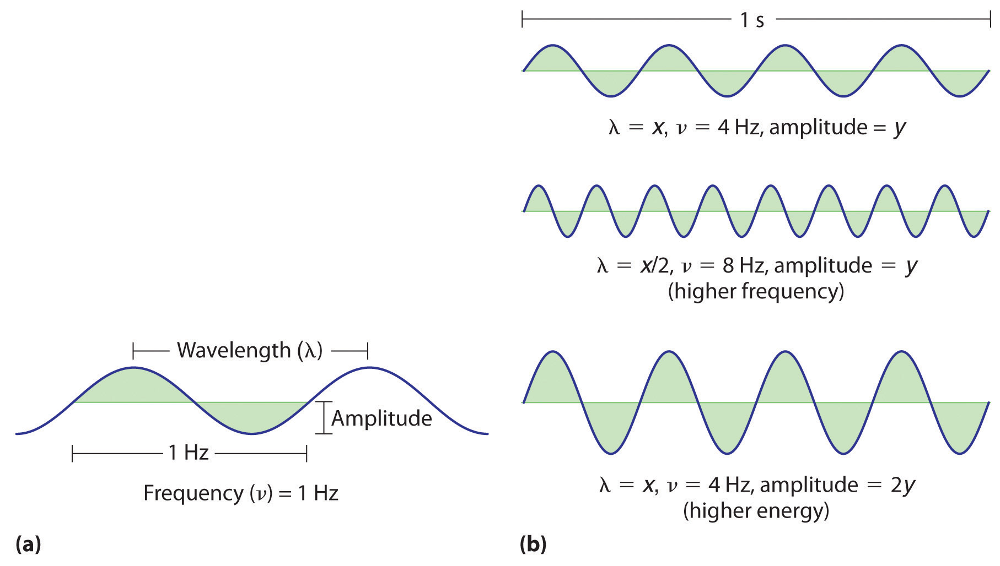(a) Wavelength (λ), frequency (ν, labeled in Hz), and amplitude are indicated on this drawing of a wave. (b) The wave with the shortest wavelength has the greatest number of wavelengths per unit time (i.e., the highest frequency). If two waves have the same frequency and speed, the one with the greater amplitude has the higher energy.
Waves have characteristic properties (Figure 6.2 "Important Properties of Waves"). As you may have noticed in Figure 6.1 "A Wave in Water", waves are periodicPhenomena, such as waves, that repeat regularly in both space and time.; that is, they repeat regularly in both space and time. The distance between two corresponding points in a wave—between the midpoints of two peaks, for example, or two troughs—is the wavelength (λ)The distance between two corresponding points in a wave—between the midpoints of two peaks or two troughs..λ is the lowercase Greek lambda, and ν is the lowercase Greek nu. Wavelengths are described by a unit of distance, typically meters. The frequency (ν)The number of oscillations (i.e., of a wave) that pass a particular point in a given period of time. of a wave is the number of oscillations that pass a particular point in a given period of time. The usual units are oscillations per second (1/s = s−1), which in the SI system is called the hertz (Hz).Named after German physicist Heinrich Hertz (1857–1894), a pioneer in the field of electromagnetic radiation. The amplitudeThe vertical height of a wave, which is defined as half the peak-to-trough height., or vertical height, of a wave is defined as half the peak-to-trough height; as the amplitude of a wave with a given frequency increases, so does its energy. As you can see in Figure 6.2 "Important Properties of Waves", two waves can have the same amplitude but different wavelengths and vice versa. The distance traveled by a wave per unit time is its speed (v)The distance traveled by a wave per unit time., which is typically measured in meters per second (m/s). The speed of a wave is equal to the product of its wavelength and frequency:
Equation 6.1
Water waves are slow compared to sound waves, which can travel through solids, liquids, and gases. Whereas water waves may travel a few meters per second, the speed of sound in dry air at 20°C is 343.5 m/s. Ultrasonic waves, which travel at an even higher speed (>1500 m/s) and have a greater frequency, are used in such diverse applications as locating underwater objects and the medical imaging of internal organs.
Water waves transmit energy through space by the periodic oscillation of matter (the water). In contrast, energy that is transmitted, or radiated, through space in the form of periodic oscillations of electric and magnetic fields is known as electromagnetic radiationEnergy that is transmitted, or radiated, through space in the form of periodic oscillations of electric and magnetic fields. (Figure 6.3 "The Nature of Electromagnetic Radiation"). Some forms of electromagnetic radiation are shown in Figure 6.4 "The Electromagnetic Spectrum". In a vacuum, all forms of electromagnetic radiation—whether microwaves, visible light, or gamma rays—travel at the speed of light (c)The speed with which all forms of electromagnetic radiation travel in a vacuum., a fundamental physical constant with a value of 2.99792458 × 108 m/s (which is about 3.00 ×108 m/s or 1.86 × 105 mi/s). This is about a million times faster than the speed of sound.
Figure 6.3 The Nature of Electromagnetic Radiation
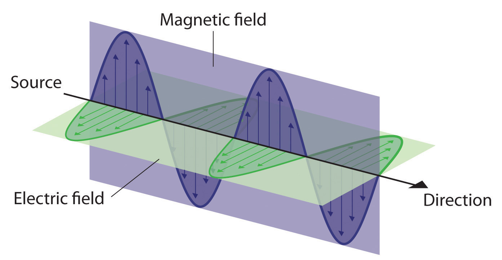All forms of electromagnetic radiation consist of perpendicular oscillating electric and magnetic fields.
Because the various kinds of electromagnetic radiation all have the same speed (c), they differ in only wavelength and frequency. As shown in Figure 6.4 "The Electromagnetic Spectrum" and Table 6.1 "Common Wavelength Units for Electromagnetic Radiation", the wavelengths of familiar electromagnetic radiation range from 101 m for radio waves to 10−12 m for gamma rays, which are emitted by nuclear reactions. By replacing v with c in Equation 6.1, we can show that the frequency of electromagnetic radiation is inversely proportional to its wavelength:
Equation 6.2
For example, the frequency of radio waves is about 108 Hz, whereas the frequency of gamma rays is about 1020 Hz. Visible light, which is electromagnetic radiation that can be detected by the human eye, has wavelengths between about 7 × 10−7 m (700 nm, or 4.3 × 1014 Hz) and 4 × 10−7 m (400 nm, or 7.5 × 1014 Hz). Within this range, the eye perceives radiation of different wavelengths (or frequencies) as light of different colors, ranging from red to violet in order of decreasing wavelength. The components of white light—a mixture of all the frequencies of visible light—can be separated by a prism, as shown in part (b) in Figure 6.4 "The Electromagnetic Spectrum". A similar phenomenon creates a rainbow, where water droplets suspended in the air act as tiny prisms.
Figure 6.4 The Electromagnetic Spectrum
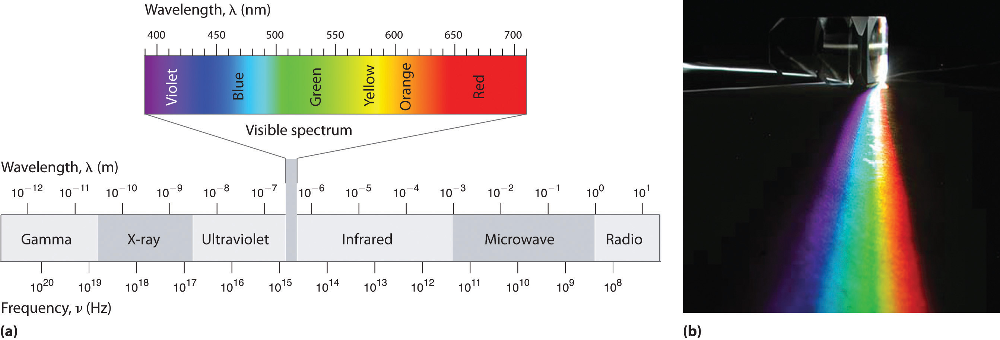(a) This diagram shows the wavelength and frequency ranges of electromagnetic radiation. The visible portion of the electromagnetic spectrum is the narrow region with wavelengths between about 400 and 700 nm. (b) When white light is passed through a prism, it is split into light of different wavelengths, whose colors correspond to the visible spectrum.
Table 6.1 Common Wavelength Units for Electromagnetic Radiation
| Unit | Symbol | Wavelength (m) | Type of Radiation |
|---|---|---|---|
| picometer | pm | 10−12 | gamma ray |
| angstrom | Å | 10−10 | x-ray |
| nanometer | nm | 10−9 | x-ray |
| micrometer | μm | 10−6 | infrared |
| millimeter | mm | 10−3 | infrared |
| centimeter | cm | 10−2 | microwave |
| meter | m | 100 | radio |
As you will soon see, the energy of electromagnetic radiation is directly proportional to its frequency and inversely proportional to its wavelength:
Equation 6.3
Equation 6.4
Whereas visible light is essentially harmless to our skin, ultraviolet light, with wavelengths of ≤ 400 nm, has enough energy to cause severe damage to our skin in the form of sunburn. Because the ozone layer described in Chapter 3 "Chemical Reactions" absorbs sunlight with wavelengths less than 350 nm, it protects us from the damaging effects of highly energetic ultraviolet radiation.
The energy of electromagnetic radiation increases with increasing frequency and decreasing wavelength.
Your favorite FM radio station, WXYZ, broadcasts at a frequency of 101.1 MHz. What is the wavelength of this radiation?
Given: frequency
Asked for: wavelength
Strategy:
Substitute the value for the speed of light in meters per second into Equation 6.2 to calculate the wavelength in meters.
Solution:
From Equation 6.2, we know that the product of the wavelength and the frequency is the speed of the wave, which for electromagnetic radiation is 2.998 × 108 m/s:
λν = c = 2.998 × 108 m/sThus the wavelength λ is given by
Exercise
As the police officer was writing up your speeding ticket, she mentioned that she was using a state-of-the-art radar gun operating at 35.5 GHz. What is the wavelength of the radiation emitted by the radar gun?
Answer: 8.45 mm
In Section 6.2 "The Quantization of Energy" and Section 6.3 "Atomic Spectra and Models of the Atom", we describe how scientists developed our current understanding of the structure of atoms using the scientific method described in Chapter 1 "Introduction to Chemistry". You will discover why scientists had to rethink their classical understanding of the nature of electromagnetic energy, which clearly distinguished between the particulate behavior of matter and the wavelike nature of energy.
relationship between wavelength, frequency, and speed of a wave
Equation 6.1: λν = v
relationship between wavelength, frequency, and speed of electromagnetic radiation
Equation 6.2: c = λν
A basic knowledge of the electronic structure of atoms requires an understanding of the properties of waves and electromagnetic radiation. A wave is a periodic oscillation by which energy is transmitted through space. All waves are periodic, repeating regularly in both space and time. Waves are characterized by several interrelated properties: wavelength (λ), the distance between successive waves; frequency (ν), the number of waves that pass a fixed point per unit time; speed (v), the rate at which the wave propagates through space; and amplitude, the magnitude of the oscillation about the mean position. The speed of a wave is equal to the product of its wavelength and frequency. Electromagnetic radiation consists of two perpendicular waves, one electric and one magnetic, propagating at the speed of light (c). Electromagnetic radiation is radiant energy that includes radio waves, microwaves, visible light, x-rays, and gamma rays, which differ only in their frequencies and wavelengths.
What are the characteristics of a wave? What is the relationship between electromagnetic radiation and wave energy?
At constant wavelength, what effect does increasing the frequency of a wave have on its speed? its amplitude?
List the following forms of electromagnetic radiation in order of increasing wavelength: x-rays, radio waves, infrared waves, microwaves, ultraviolet waves, visible waves, and gamma rays. List them in order of increasing frequency. Which has the highest energy?
A large industry is centered on developing skin-care products, such as suntan lotions and cosmetics, that cannot be penetrated by ultraviolet radiation. How does the wavelength of visible light compare with the wavelength of ultraviolet light? How does the energy of visible light compare with the energy of ultraviolet light? Why is this industry focused on blocking ultraviolet light rather than visible light?
The human eye is sensitive to what fraction of the electromagnetic spectrum, assuming a typical spectral range of 104 to 1020 Hz? If we came from the planet Krypton and had x-ray vision (i.e., if our eyes were sensitive to x-rays in addition to visible light), how would this fraction be changed?
What is the frequency in megahertz corresponding to each wavelength?
What is the frequency in megahertz corresponding to each wavelength?
Line spectra are also observed for molecular species. Given the following characteristic wavelengths for each species, identify the spectral region (ultraviolet, visible, etc.) in which the following line spectra will occur. Given 1.00 mol of each compound and the wavelength of absorbed or emitted light, how much energy does this correspond to?
What is the speed of a wave in meters per second that has a wavelength of 1250 m and a frequency of 2.36 × 105 s−1?
A wave travels at 3.70 m/s with a frequency of 4.599 × 107 Hz and an amplitude of 1.0 m. What is its wavelength in nanometers?
An AM radio station broadcasts with a wavelength of 248.0 m. What is the broadcast frequency of the station in kilohertz? An AM station has a broadcast range of 92.6 MHz. What is the corresponding wavelength range in meters for this reception?
An FM radio station broadcasts with a wavelength of 3.21 m. What is the broadcast frequency of the station in megahertz? An FM radio typically has a broadcast range of 82–112 MHz. What is the corresponding wavelength range in meters for this reception?
A microwave oven operates at a frequency of approximately 2450 MHz. What is the corresponding wavelength? Water, with its polar molecules, absorbs electromagnetic radiation primarily in the infrared portion of the spectrum. Given this fact, why are microwave ovens used for cooking food?
By the late 19th century, many physicists thought their discipline was well on the way to explaining most natural phenomena. They could calculate the motions of material objects using Newton’s laws of classical mechanics, and they could describe the properties of radiant energy using mathematical relationships known as Maxwell’s equations, developed in 1873 by James Clerk Maxwell, a Scottish physicist. The universe appeared to be a simple and orderly place, containing matter, which consisted of particles that had mass and whose location and motion could be accurately described, and electromagnetic radiation, which was viewed as having no mass and whose exact position in space could not be fixed. Thus matter and energy were considered distinct and unrelated phenomena. Soon, however, scientists began to look more closely at a few inconvenient phenomena that could not be explained by the theories available at the time.
One phenomenon that seemed to contradict the theories of classical physics was blackbody radiationElectromagnetic radiation whose wavelength and color depends on the temperature of the object., the energy emitted by an object when it is heated. The wavelength of energy emitted by an object depends on only its temperature, not its surface or composition. Hence an electric stove burner or the filament of a space heater glows dull red or orange when heated, whereas the much hotter tungsten wire in an incandescent light bulb gives off a yellowish light (Figure 6.5 "Blackbody Radiation").
Figure 6.5 Blackbody Radiation
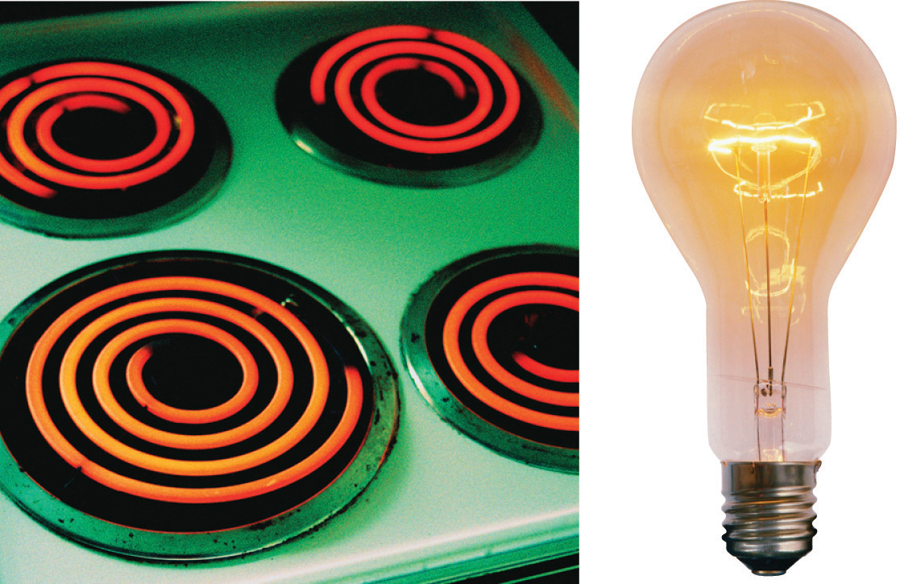When heated, all objects emit electromagnetic radiation whose wavelength (and color) depends on the temperature of the object. A relatively low-temperature object, such as an electric stove element, on a low setting appears red, whereas a higher-temperature object, such as the filament of an incandescent light bulb, appears yellow or white.
The intensity of radiation is a measure of the energy emitted per unit area. A plot of the intensity of blackbody radiation as a function of wavelength for an object at various temperatures is shown in Figure 6.6 "Relationship between the Temperature of an Object and the Spectrum of Blackbody Radiation It Emits". One of the major assumptions of classical physics was that energy increased or decreased in a smooth, continuous manner. For example, classical physics predicted that as wavelength decreased, the intensity of the radiation an object emits should increase in a smooth curve without limit at all temperatures, as shown by the broken line for 6000 K in Figure 6.6 "Relationship between the Temperature of an Object and the Spectrum of Blackbody Radiation It Emits". Thus classical physics could not explain the sharp decrease in the intensity of radiation emitted at shorter wavelengths (primarily in the ultraviolet region of the spectrum), which we now refer to as the “ultraviolet catastrophe.” In 1900, however, the German physicist Max Planck (1858–1947) explained the ultraviolet catastrophe by proposing that the energy of electromagnetic waves is quantized rather than continuous. This means that for each temperature, there is a maximum intensity of radiation that is emitted in a blackbody object, corresponding to the peaks in Figure 6.6 "Relationship between the Temperature of an Object and the Spectrum of Blackbody Radiation It Emits", so the intensity does not follow a smooth curve as the temperature increases, as predicted by classical physics. Thus energy could be gained or lost only in integral multiples of some smallest unit of energy, a quantumThe smallest possible unit of energy. Energy can be gained or lost only in integral multiples of a quantum..
Figure 6.6 Relationship between the Temperature of an Object and the Spectrum of Blackbody Radiation It Emits
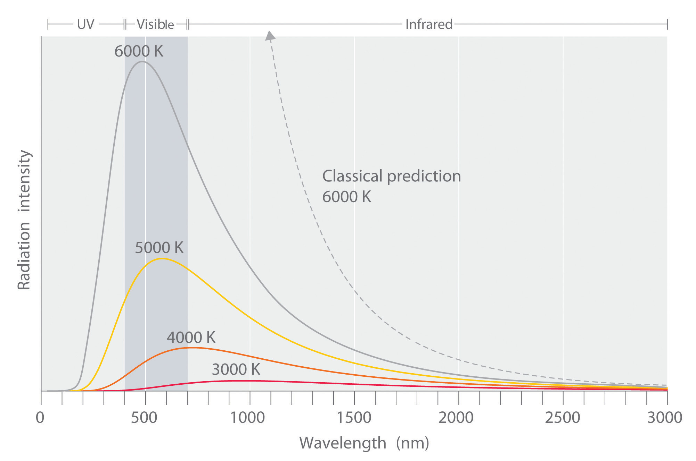At relatively low temperatures, most radiation is emitted at wavelengths longer than 700 nm, which is in the infrared portion of the spectrum. The dull red glow of the electric stove element in Figure 6.5 "Blackbody Radiation" is due to the small amount of radiation emitted at wavelengths less than 700 nm, which the eye can detect. As the temperature of the object increases, the maximum intensity shifts to shorter wavelengths, successively resulting in orange, yellow, and finally white light. At high temperatures, all wavelengths of visible light are emitted with approximately equal intensities. The white light spectrum shown for an object at 6000 K closely approximates the spectrum of light emitted by the sun (Figure 6.14 "The Visible Spectrum of Sunlight"). Note the sharp decrease in the intensity of radiation emitted at wavelengths below 400 nm, which constituted the ultraviolet catastrophe. The classical prediction fails to fit the experimental curves entirely and does not have a maximum intensity.
In addition to being a physicist, Planck was a gifted pianist, who at one time considered music as a career. During the 1930s, Planck felt it was his duty to remain in Germany, despite his open opposition to the policies of the Nazi government. One of his sons was executed in 1944 for his part in an unsuccessful attempt to assassinate Hitler, and bombing during the last weeks of World War II destroyed Planck’s home.
Although quantization may seem to be an unfamiliar concept, we encounter it frequently. For example, US money is integral multiples of pennies. Similarly, musical instruments like a piano or a trumpet can produce only certain musical notes, such as C or F sharp. Because these instruments cannot produce a continuous range of frequencies, their frequencies are quantized. Even electrical charge is quantized: an ion may have a charge of −1 or −2 but not −1.33.
Planck postulated that the energy of a particular quantum of radiant energy could be described explicitly by the equation
Equation 6.5
E = hνwhere the proportionality constant h is called Planck’s constant, one of the most accurately known fundamental constants in science. For our purposes, its value to four significant figures is generally sufficient:
h = 6.626 × 10−34 J·s (joule-seconds)As the frequency of electromagnetic radiation increases, the magnitude of the associated quantum of radiant energy increases. By assuming that energy can be emitted by an object only in integral multiples of hν, Planck devised an equation that fit the experimental data shown in Figure 6.6 "Relationship between the Temperature of an Object and the Spectrum of Blackbody Radiation It Emits". We can understand Planck’s explanation of the ultraviolet catastrophe qualitatively as follows: At low temperatures, radiation with only relatively low frequencies is emitted, corresponding to low-energy quanta. As the temperature of an object increases, there is an increased probability of emitting radiation with higher frequencies, corresponding to higher-energy quanta. At any temperature, however, it is simply more probable for an object to lose energy by emitting n lower-energy quanta than a single very high-energy quantum that corresponds to ultraviolet radiation. The result is a maximum in the plot of intensity of emitted radiation versus wavelength, as shown in Figure 6.6 "Relationship between the Temperature of an Object and the Spectrum of Blackbody Radiation It Emits", and a shift in the position of the maximum to lower wavelength (higher frequency) with increasing temperature.
At the time he proposed his radical hypothesis, Planck could not explain why energies should be quantized. Initially, his hypothesis explained only one set of experimental data—blackbody radiation. If quantization were observed for a large number of different phenomena, then quantization would become a law (as defined in Chapter 1 "Introduction to Chemistry"). In time, a theory might be developed to explain that law. As things turned out, Planck’s hypothesis was the seed from which modern physics grew.
Only five years after he proposed it, Planck’s quantization hypothesis was used to explain a second phenomenon that conflicted with the accepted laws of classical physics. When certain metals are exposed to light, electrons are ejected from their surface (Figure 6.7 "The Photoelectric Effect"). Classical physics predicted that the number of electrons emitted and their kinetic energy should depend on only the intensity of the light, not its frequency. In fact, however, each metal was found to have a characteristic threshold frequency of light; below that frequency, no electrons are emitted regardless of the light’s intensity. Above the threshold frequency, the number of electrons emitted was found to be proportional to the intensity of the light, and their kinetic energy was proportional to the frequency. This phenomenon was called the photoelectric effectA phenomenon in which electrons are ejected from the surface of a metal that has been exposed to light..
Figure 6.7 The Photoelectric Effect
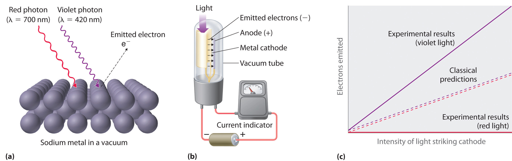(a) Irradiating a metal surface with photons of sufficiently high energy causes electrons to be ejected from the metal. (b) A photocell that uses the photoelectric effect, similar to those found in automatic door openers. When light strikes the metal cathode, electrons are emitted and attracted to the anode, resulting in a flow of electrical current. If the incoming light is interrupted by, for example, a passing person, the current drops to zero. (c) In contrast to predictions using classical physics, no electrons are emitted when photons of light with energy less than Eo, such as red light, strike the cathode. The energy of violet light is above the threshold frequency, so the number of emitted photons is proportional to the light’s intensity.
Albert Einstein (1879–1955; Nobel Prize in Physics, 1921) quickly realized that Planck’s hypothesis about the quantization of radiant energy could also explain the photoelectric effect. The key feature of Einstein’s hypothesis was the assumption that radiant energy arrives at the metal surface in particles that we now call photonsA quantum of radiant energy, each of which possesses a particular energy given by , each possessing a particular energy E given by Equation 6.5. Einstein postulated that each metal has a particular electrostatic attraction for its electrons that must be overcome before an electron can be emitted from its surface (Eo = hνo). If photons of light with energy less than Eo strike a metal surface, no single photon has enough energy to eject an electron, so no electrons are emitted regardless of the intensity of the light. If a photon with energy greater than Eo strikes the metal, then part of its energy is used to overcome the forces that hold the electron to the metal surface, and the excess energy appears as the kinetic energy of the ejected electron:
Equation 6.6
kinetic energy of ejected electron = E − Eo = hν − hνo = h(ν − νo)When a metal is struck by light with energy above the threshold energy Eo, the number of emitted electrons is proportional to the intensity of the light beam, which corresponds to the number of photons per square centimeter, but the kinetic energy of the emitted electrons is proportional to the frequency of the light. Thus Einstein showed that the energy of the emitted electrons depended on the frequency of the light, contrary to the prediction of classical physics.
In 1900, Einstein was working in the Swiss patent office in Bern. He was born in Germany and throughout his childhood his parents and teachers had worried that he might be developmentally disabled. The patent office job was a low-level civil service position that was not very demanding, but it did allow Einstein to spend a great deal of time reading and thinking about physics. In 1905, he published his paper on the photoelectric effect, for which he received the Nobel Prize in 1921.
Planck’s and Einstein’s postulate that energy is quantized is in many ways similar to Dalton’s description of atoms. Both theories are based on the existence of simple building blocks, atoms in one case and quanta of energy in the other. The work of Planck and Einstein thus suggested a connection between the quantized nature of energy and the properties of individual atoms. In fact, Einstein’s Nobel Prize was awarded for his work on the photoelectric effect (not for his more famous equation E = mc2), demonstrating its fundamental importance.
Recently, scientists have theorized that even our sense of smell has its basis in quantum physics. Preliminary research indicates that odorant molecules absorb a quantum of energy that causes their bonds to vibrate at a specific frequency. Because different assemblages of molecules have different characteristic frequencies, these vibrations seem to act as a molecular signature that can be detected as an odor. Studies with flies show that they can distinguish between similar molecules with different vibrational frequencies. This vibrational theory of smell could serve as a discriminatory process in nature in other ways and is an active area of research.
Figure 6.8 A Beam of Red Light Emitted by a Ruby Laser
Ruby lasers, which emit red light at a wavelength of 694.3 nm, are used to read bar codes. When used for commercial applications, such lasers are generally designed to emit radiation over a narrow range of wavelengths to reduce their cost.
A ruby laser, a device that produces light in a narrow range of wavelengths (Section 6.3 "Atomic Spectra and Models of the Atom"), emits red light at a wavelength of 694.3 nm (Figure 6.8 "A Beam of Red Light Emitted by a Ruby Laser"). What is the energy in joules of a
Given: wavelength
Asked for: energy of single photon and mole of photons
Strategy:
A Use Equation 6.2 and Equation 6.5 to calculate the energy in joules.
B Multiply the energy of a single photon by Avogadro’s number to obtain the energy in a mole of photons.
Solution:
The energy of a single photon is given by E = hν = hc/λ.
B To calculate the energy in a mole of photons, we multiply the energy of a single photon by the number of photons in a mole (Avogadro’s number). If we write the energy of a photon as 2.861 × 10−19 J/photon, we obtain the energy of a mole of photons with wavelength 694.3 nm:
This energy is of the same magnitude as some of the enthalpies of reaction in Chapter 5 "Energy Changes in Chemical Reactions", and, as you will see in Chapter 8 "Ionic versus Covalent Bonding", it is comparable to the strength of many chemical bonds. As a result, light can be used to initiate chemical reactions. In fact, an entire area of chemistry called photochemistry is devoted to studying such processes. In the phenomenon of photosynthesis, green plants use the energy of visible light to convert carbon dioxide and water into sugars such as glucose.
Exercise
An x-ray generator, such as those used in hospitals, emits radiation with a wavelength of 1.544 Å.
Answer:
The properties of blackbody radiation, the radiation emitted by hot objects, could not be explained with classical physics. Max Planck postulated that energy was quantized and could be emitted or absorbed only in integral multiples of a small unit of energy, known as a quantum. The energy of a quantum is proportional to the frequency of the radiation; the proportionality constant h is a fundamental constant (Planck’s constant). Albert Einstein used Planck’s concept of the quantization of energy to explain the photoelectric effect, the ejection of electrons from certain metals when exposed to light. Einstein postulated the existence of what today we call photons, particles of light with a particular energy, E = hν. Both energy and matter have fundamental building blocks: quanta and atoms, respectively.
Describe the relationship between the energy of a photon and its frequency.
How was the ultraviolet catastrophe explained?
If electromagnetic radiation with a continuous range of frequencies above the threshold frequency of a metal is allowed to strike a metal surface, is the kinetic energy of the ejected electrons continuous or quantized? Explain your answer.
The vibrational energy of a plucked guitar string is said to be quantized. What do we mean by this? Are the sounds emitted from the 88 keys on a piano also quantized?
Which of the following exhibit quantized behavior: a human voice, the speed of a car, a harp, the colors of light, automobile tire sizes, waves from a speedboat?
The energy of a photon is directly proportional to the frequency of the electromagnetic radiation.
Quantized: harp, tire size, speedboat waves; continuous: human voice, colors of light, car speed.
What is the energy of a photon of light with each wavelength? To which region of the electromagnetic spectrum does each wavelength belong?
How much energy is contained in each of the following? To which region of the electromagnetic spectrum does each wavelength belong?
A mole of photons is found to have an energy of 225 kJ. What is the wavelength of the radiation?
Use the data in Table 6.1 "Common Wavelength Units for Electromagnetic Radiation" to calculate how much more energetic a single gamma-ray photon is than a radio-wave photon. How many photons from a radio source operating at a frequency of 8 × 105 Hz would be required to provide the same amount of energy as a single gamma-ray photon with a frequency of 3 × 1019 Hz?
Use the data in Table 6.1 "Common Wavelength Units for Electromagnetic Radiation" to calculate how much more energetic a single x-ray photon is than a photon of ultraviolet light.
A radio station has a transmitter that broadcasts at a frequency of 100.7 MHz with a power output of 50 kW. Given that 1 W = 1 J/s, how many photons are emitted by the transmitter each second?
532 nm
The photoelectric effect provided indisputable evidence for the existence of the photon and thus the particle-like behavior of electromagnetic radiation. The concept of the photon, however, emerged from experimentation with thermal radiation, electromagnetic radiation emitted as the result of a source’s temperature, which produces a continuous spectrum of energies. More direct evidence was needed to verify the quantized nature of electromagnetic radiation. In this section, we describe how experimentation with visible light provided this evidence.
Although objects at high temperature emit a continuous spectrum of electromagnetic radiation (Figure 6.6 "Relationship between the Temperature of an Object and the Spectrum of Blackbody Radiation It Emits"), a different kind of spectrum is observed when pure samples of individual elements are heated. For example, when a high-voltage electrical discharge is passed through a sample of hydrogen gas at low pressure, the resulting individual isolated hydrogen atoms caused by the dissociation of H2 emit a red light. Unlike blackbody radiation, the color of the light emitted by the hydrogen atoms does not depend greatly on the temperature of the gas in the tube. When the emitted light is passed through a prism, only a few narrow lines, called a line spectrumA spectrum in which light of only a certain wavelength is emitted or absorbed, rather than a continuous range of wavelengths., are seen (Figure 6.9 "The Emission of Light by Hydrogen Atoms"), rather than a continuous range of colors. The light emitted by hydrogen atoms is red because, of its four characteristic lines, the most intense line in its spectrum is in the red portion of the visible spectrum, at 656 nm. With sodium, however, we observe a yellow color because the most intense lines in its spectrum are in the yellow portion of the spectrum, at about 589 nm.
Figure 6.9 The Emission of Light by Hydrogen Atoms

(a) A sample of excited hydrogen atoms emits a characteristic red light. (b) When the light emitted by a sample of excited hydrogen atoms is split into its component wavelengths by a prism, four characteristic violet, blue, green, and red emission lines can be observed, the most intense of which is at 656 nm.
Such emission spectra were observed for many other elements in the late 19th century, which presented a major challenge because classical physics was unable to explain them. Part of the explanation is provided by Planck’s equation (Equation 6.5): the observation of only a few values of λ (or ν) in the line spectrum meant that only a few values of E were possible. Thus the energy levels of a hydrogen atom had to be quantized; in other words, only states that had certain values of energy were possible, or allowed. If a hydrogen atom could have any value of energy, then a continuous spectrum would have been observed, similar to blackbody radiation.
In 1885, a Swiss mathematics teacher, Johann Balmer (1825–1898), showed that the frequencies of the lines observed in the visible region of the spectrum of hydrogen fit a simple equation that can be expressed as follows:
Equation 6.7
where n = 3, 4, 5, 6. As a result, these lines are known as the Balmer series. The Swedish physicist Johannes Rydberg (1854–1919) subsequently restated and expanded Balmer’s result in the Rydberg equation:
Equation 6.8
where n1 and n2 are positive integers, n2 > n1, and the Rydberg constant, has a value of 1.09737 × 107 m−1.
A mathematics teacher at a secondary school for girls in Switzerland, Balmer was 60 years old when he wrote the paper on the spectral lines of hydrogen that made him famous. He published only one other paper on the topic, which appeared when he was 72 years old.
Like Balmer’s equation, Rydberg’s simple equation described the wavelengths of the visible lines in the emission spectrum of hydrogen (with n1 = 2, n2 = 3, 4, 5,…). More important, Rydberg’s equation also described the wavelengths of other series of lines that would be observed in the emission spectrum of hydrogen: one in the ultraviolet (n1 = 1, n2 = 2, 3, 4,…) and one in the infrared (n1 = 3, n2 = 4, 5, 6). Unfortunately, scientists had not yet developed any theoretical justification for an equation of this form.
In 1913, a Danish physicist, Niels Bohr (1885–1962; Nobel Prize in Physics, 1922), proposed a theoretical model for the hydrogen atom that explained its emission spectrum. Bohr’s model required only one assumption: The electron moves around the nucleus in circular orbits that can have only certain allowed radii. As discussed in Chapter 1 "Introduction to Chemistry", Rutherford’s earlier model of the atom had also assumed that electrons moved in circular orbits around the nucleus and that the atom was held together by the electrostatic attraction between the positively charged nucleus and the negatively charged electron. Although we now know that the assumption of circular orbits was incorrect, Bohr’s insight was to propose that the electron could occupy only certain regions of space.
During the Nazi occupation of Denmark in World War II, Bohr escaped to the United States, where he became associated with the Atomic Energy Project. In his final years, he devoted himself to the peaceful application of atomic physics and to resolving political problems arising from the development of atomic weapons.
Using classical physics, Bohr showed that the energy of an electron in a particular orbit is given by
Equation 6.9
where is the Rydberg constant, h is Planck’s constant, c is the speed of light, and n is a positive integer corresponding to the number assigned to the orbit, with n = 1 corresponding to the orbit closest to the nucleus.The negative sign in Equation 6.9 is a convention indicating that the electron-nucleus pair has a lower energy when they are near each other than when they are infinitely far apart, corresponding to n = ∞. The latter condition is arbitrarily assigned an energy of zero. Thus the orbit with n = 1 is the lowest in energy. Because a hydrogen atom with its one electron in this orbit has the lowest possible energy, this is the ground stateThe most stable arrangement of electrons for an element or a compound., the most stable arrangement for a hydrogen atom. As n increases, the radius of the orbit increases; the electron is farther from the proton, which results in a less stable arrangement with higher potential energy (Figure 6.10 "The Bohr Model of the Hydrogen Atom"). A hydrogen atom with an electron in an orbit with n > 1 is therefore in an excited stateAny arrangement of electrons that is higher in energy than the ground state.: its energy is higher than the energy of the ground state. When an atom in an excited state undergoes a transition to the ground state in a process called decay, it loses energy by emitting a photon whose energy corresponds to the difference in energy between the two states (Figure 6.11 "The Emission of Light by a Hydrogen Atom in an Excited State").
Figure 6.10 The Bohr Model of the Hydrogen Atom
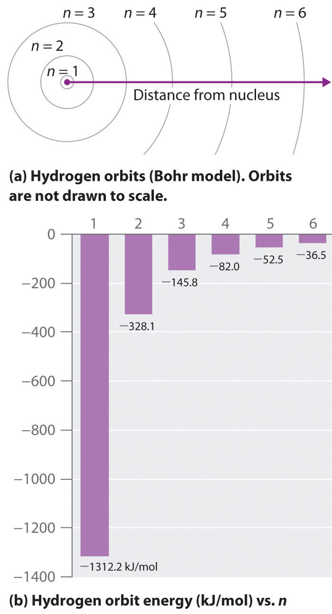(a) The distance of the orbit from the nucleus increases with increasing n. (b) The energy of the orbit becomes increasingly less negative with increasing n.
Figure 6.11 The Emission of Light by a Hydrogen Atom in an Excited State
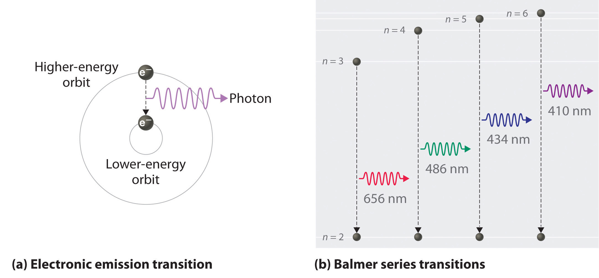(a) Light is emitted when the electron undergoes a transition from an orbit with a higher value of n (at a higher energy) to an orbit with a lower value of n (at lower energy). (b) The Balmer series of emission lines is due to transitions from orbits with n ≥ 3 to the orbit with n = 2. The differences in energy between these levels corresponds to light in the visible portion of the electromagnetic spectrum.
So the difference in energy (ΔE) between any two orbits or energy levels is given by where n1 is the final orbit and n2 the initial orbit. Substituting from Bohr’s equation (Equation 6.9) for each energy value gives
Equation 6.10
If n2 > n1, the transition is from a higher energy state (larger-radius orbit) to a lower energy state (smaller-radius orbit), as shown by the dashed arrow in part (a) in Figure 6.11 "The Emission of Light by a Hydrogen Atom in an Excited State". Substituting hc/λ for ΔE gives
Equation 6.11
Canceling hc on both sides gives
Equation 6.12
Except for the negative sign, this is the same equation that Rydberg obtained experimentally. The negative sign in Equation 6.11 and Equation 6.12 indicates that energy is released as the electron moves from orbit n2 to orbit n1 because orbit n2 is at a higher energy than orbit n1. Bohr calculated the value of independently and obtained a value of 1.0974 × 107 m−1, the same number Rydberg had obtained by analyzing the emission spectra.
We can now understand the physical basis for the Balmer series of lines in the emission spectrum of hydrogen (part (b) in Figure 6.9 "The Emission of Light by Hydrogen Atoms"). As shown in part (b) in Figure 6.11 "The Emission of Light by a Hydrogen Atom in an Excited State", the lines in this series correspond to transitions from higher-energy orbits (n > 2) to the second orbit (n = 2). Thus the hydrogen atoms in the sample have absorbed energy from the electrical discharge and decayed from a higher-energy excited state (n > 2) to a lower-energy state (n = 2) by emitting a photon of electromagnetic radiation whose energy corresponds exactly to the difference in energy between the two states (part (a) in Figure 6.11 "The Emission of Light by a Hydrogen Atom in an Excited State"). The n = 3 to n = 2 transition gives rise to the line at 656 nm (red), the n = 4 to n = 2 transition to the line at 486 nm (green), the n = 5 to n = 2 transition to the line at 434 nm (blue), and the n = 6 to n = 2 transition to the line at 410 nm (violet). Because a sample of hydrogen contains a large number of atoms, the intensity of the various lines in a line spectrum depends on the number of atoms in each excited state. At the temperature in the gas discharge tube, more atoms are in the n = 3 than the n ≥ 4 levels. Consequently, the n = 3 to n = 2 transition is the most intense line, producing the characteristic red color of a hydrogen discharge (part (a) in Figure 6.9 "The Emission of Light by Hydrogen Atoms"). Other families of lines are produced by transitions from excited states with n > 1 to the orbit with n = 1 or to orbits with n ≥ 3. These transitions are shown schematically in Figure 6.12 "Electron Transitions Responsible for the Various Series of Lines Observed in the Emission Spectrum of Hydrogen".
Figure 6.12 Electron Transitions Responsible for the Various Series of Lines Observed in the Emission Spectrum of Hydrogen

The Lyman series of lines is due to transitions from higher-energy orbits to the lowest-energy orbit (n = 1); these transitions release a great deal of energy, corresponding to radiation in the ultraviolet portion of the electromagnetic spectrum. The Paschen, Brackett, and Pfund series of lines are due to transitions from higher-energy orbits to orbits with n = 3, 4, and 5, respectively; these transitions release substantially less energy, corresponding to infrared radiation. (Orbits are not drawn to scale.)
In contemporary applications, electron transitions are used in timekeeping that needs to be exact. Telecommunications systems, such as cell phones, depend on timing signals that are accurate to within a millionth of a second per day, as are the devices that control the US power grid. Global positioning system (GPS) signals must be accurate to within a billionth of a second per day, which is equivalent to gaining or losing no more than one second in 1,400,000 years. Quantifying time requires finding an event with an interval that repeats on a regular basis. To achieve the accuracy required for modern purposes, physicists have turned to the atom. The current standard used to calibrate clocks is the cesium atom. Supercooled cesium atoms are placed in a vacuum chamber and bombarded with microwaves whose frequencies are carefully controlled. When the frequency is exactly right, the atoms absorb enough energy to undergo an electronic transition to a higher-energy state. Decay to a lower-energy state emits radiation. The microwave frequency is continually adjusted, serving as the clock’s pendulum. In 1967, the second was defined as the duration of 9,192,631,770 oscillations of the resonant frequency of a cesium atom, called the cesium clock. Research is currently under way to develop the next generation of atomic clocks that promise to be even more accurate. Such devices would allow scientists to monitor vanishingly faint electromagnetic signals produced by nerve pathways in the brain and geologists to measure variations in gravitational fields, which cause fluctuations in time, that would aid in the discovery of oil or minerals.
The so-called Lyman series of lines in the emission spectrum of hydrogen corresponds to transitions from various excited states to the n = 1 orbit. Calculate the wavelength of the lowest-energy line in the Lyman series to three significant figures. In what region of the electromagnetic spectrum does it occur?
Given: lowest-energy orbit in the Lyman series
Asked for: wavelength of the lowest-energy Lyman line and corresponding region of the spectrum
Strategy:
A Substitute the appropriate values into Equation 6.8 (the Rydberg equation) and solve for λ.
B Use Figure 6.4 "The Electromagnetic Spectrum" to locate the region of the electromagnetic spectrum corresponding to the calculated wavelength.
Solution:
We can use the Rydberg equation to calculate the wavelength:
A For the Lyman series, n1 = 1. The lowest-energy line is due to a transition from the n = 2 to n = 1 orbit because they are the closest in energy.
and
λ = 1.215 × 10−7 m = 122 nmB This wavelength is in the ultraviolet region of the spectrum.
Exercise
The Pfund series of lines in the emission spectrum of hydrogen corresponds to transitions from higher excited states to the n = 5 orbit. Calculate the wavelength of the second line in the Pfund series to three significant figures. In which region of the spectrum does it lie?
Answer: 4.65 × 103 nm; infrared
Bohr’s model of the hydrogen atom gave an exact explanation for its observed emission spectrum. The following are his key contributions to our understanding of atomic structure:
Unfortunately, Bohr could not explain why the electron should be restricted to particular orbits. Also, despite a great deal of tinkering, such as assuming that orbits could be ellipses rather than circles, his model could not quantitatively explain the emission spectra of any element other than hydrogen (Figure 6.13 "The Emission Spectra of Elements Compared with Hydrogen"). In fact, Bohr’s model worked only for species that contained just one electron: H, He+, Li2+, and so forth. Scientists needed a fundamental change in their way of thinking about the electronic structure of atoms to advance beyond the Bohr model.
Figure 6.13 The Emission Spectra of Elements Compared with Hydrogen

These images show (a) hydrogen gas, which is atomized to hydrogen atoms in the discharge tube; (b) neon; and (c) mercury.
Thus far we have explicitly considered only the emission of light by atoms in excited states, which produces an emission spectrumA spectrum produced by the emission of light by atoms in excited states.. The converse, absorption of light by ground-state atoms to produce an excited state, can also occur, producing an absorption spectrumA spectrum produced by the absorption of light by ground-state atoms.. Because each element has characteristic emission and absorption spectra, scientists can use such spectra to analyze the composition of matter, as we describe in Section 6.4 "The Relationship between Energy and Mass".
When an atom emits light, it decays to a lower energy state; when an atom absorbs light, it is excited to a higher energy state.
If white light is passed through a sample of hydrogen, hydrogen atoms absorb energy as an electron is excited to higher energy levels (orbits with n ≥ 2). If the light that emerges is passed through a prism, it forms a continuous spectrum with black lines (corresponding to no light passing through the sample) at 656, 468, 434, and 410 nm. These wavelengths correspond to the n = 2 to n = 3, n = 2 to n = 4, n = 2 to n = 5, and n = 2 to n = 6 transitions. Any given element therefore has both a characteristic emission spectrum and a characteristic absorption spectrum, which are essentially complementary images.
Absorption of light by a hydrogen atom. (a) When a hydrogen atom absorbs a photon of light, an electron is excited to an orbit that has a higher energy and larger value of n. (b) Images of the emission and absorption spectra of hydrogen are shown here.
Emission and absorption spectra form the basis of spectroscopy, which uses spectra to provide information about the structure and the composition of a substance or an object. In particular, astronomers use emission and absorption spectra to determine the composition of stars and interstellar matter. As an example, consider the spectrum of sunlight shown in Figure 6.14 "The Visible Spectrum of Sunlight". Because the sun is very hot, the light it emits is in the form of a continuous emission spectrum. Superimposed on it, however, is a series of dark lines due primarily to the absorption of specific frequencies of light by cooler atoms in the outer atmosphere of the sun. By comparing these lines with the spectra of elements measured on Earth, we now know that the sun contains large amounts of hydrogen, iron, and carbon, along with smaller amounts of other elements. During the solar eclipse of 1868, the French astronomer Pierre Janssen (1824–1907) observed a set of lines that did not match those of any known element. He suggested that they were due to the presence of a new element, which he named helium, from the Greek helios, meaning “sun.” Helium was finally discovered in uranium ores on Earth in 1895.
Figure 6.14 The Visible Spectrum of Sunlight

The characteristic dark lines are mostly due to the absorption of light by elements that are present in the cooler outer part of the sun’s atmosphere; specific elements are indicated by the labels. The lines at 628 and 687 nm, however, are due to the absorption of light by oxygen molecules in Earth’s atmosphere.
The familiar red color of “neon” signs used in advertising is due to the emission spectrum of neon shown in part (b) in Figure 6.13 "The Emission Spectra of Elements Compared with Hydrogen". Similarly, the blue and yellow colors of certain street lights are caused, respectively, by mercury and sodium discharges. In all these cases, an electrical discharge excites neutral atoms to a higher energy state, and light is emitted when the atoms decay to the ground state. In the case of mercury, most of the emission lines are below 450 nm, which produces a blue light (part (c) in Figure 6.13 "The Emission Spectra of Elements Compared with Hydrogen"). In the case of sodium, the most intense emission lines are at 589 nm, which produces an intense yellow light.
Sodium and mercury spectra. Many street lights use bulbs that contain sodium or mercury vapor. Due to the very different emission spectra of these elements, they emit light of different colors.
Figure 6.15 The Chemistry of Fireworks

(a) In the “multibreak” shell used for fireworks, the chambers contain mixtures of fuels and oxidizers plus compounds for special effects (“stars”) connected by time-delay fuses so that the chambers explode in stages. (b) The finale of a fireworks display usually consists of many shells fired simultaneously to give a dazzling multicolor display. The labels indicate the substances that are responsible for the colors of some of the fireworks shown.
The colors of fireworks are also due to atomic emission spectra. As shown in part (a) in Figure 6.15 "The Chemistry of Fireworks", a typical shell used in a fireworks display contains gunpowder to propel the shell into the air and a fuse to initiate a variety of redox reactions that produce heat and small explosions. Thermal energy excites the atoms to higher energy states; as they decay to lower energy states, the atoms emit light that gives the familiar colors. When oxidant/reductant mixtures listed in Table 6.2 "Common Chemicals Used in the Manufacture of Fireworks*" are ignited, a flash of white or yellow light is produced along with a loud bang. Achieving the colors shown in part (b) in Figure 6.15 "The Chemistry of Fireworks" requires adding a small amount of a substance that has an emission spectrum in the desired portion of the visible spectrum. For example, sodium is used for yellow because of its 589 nm emission lines. The intense yellow color of sodium would mask most other colors, so potassium and ammonium salts, rather than sodium salts, are usually used as oxidants to produce other colors, which explains the preponderance of such salts in Table 6.2 "Common Chemicals Used in the Manufacture of Fireworks*". Strontium salts, which are also used in highway flares, emit red light, whereas barium gives a green color. Blue is one of the most difficult colors to achieve. Copper(II) salts emit a pale blue light, but copper is dangerous to use because it forms highly unstable explosive compounds with anions such as chlorate. As you might guess, preparing fireworks with the desired properties is a complex, challenging, and potentially hazardous process.
Table 6.2 Common Chemicals Used in the Manufacture of Fireworks*
| Oxidizers | Fuels (reductants) | Special effects |
|---|---|---|
| ammonium perchlorate | aluminum | blue flame: copper carbonate, copper sulfate, or copper oxide |
| barium chlorate | antimony sulfide | red flame: strontium nitrate or strontium carbonate |
| barium nitrate | charcoal | white flame: magnesium or aluminum |
| potassium chlorate | magnesium | yellow flame: sodium oxalate or cryolite (Na3AlF6) |
| potassium nitrate | sulfur | green flame: barium nitrate or barium chlorate |
| potassium perchlorate | titanium | white smoke: potassium nitrate plus sulfur |
| strontium nitrate | colored smoke: potassium chlorate and sulfur, plus organic dye | |
| whistling noise: potassium benzoate or sodium salicylate | ||
| white sparks: aluminum, magnesium, or titanium | ||
| gold sparks: iron fillings or charcoal | ||
| *Almost any combination of an oxidizer and a fuel may be used along with the compounds needed to produce a desired special effect. | ||
Most light emitted by atoms is polychromatic—containing more than one wavelength. In contrast, lasers (from light amplification by stimulated emission of radiation) emit monochromatic light—a single wavelength only. Lasers have many applications in fiber-optic telecommunications, the reading and recording of compact discs (CDs) and digital video discs (DVDs), steel cutting, and supermarket checkout scanners. Laser beams are generated by the same general phenomenon that gives rise to emission spectra, with one difference: only a single excited state is produced, which in principle results in only a single frequency of emitted light. In practice, however, inexpensive commercial lasers actually emit light with a very narrow range of wavelengths.
How a CD player uses a laser to read a CD. Inside a CD is a flat, light-reflecting layer called “land.” On the land are many “pits” recorded in a spiral-shaped track. (From the laser’s point of view, pits are actually the “bumps” shown here because the master disc with pits is duplicated negatively, turning the pits into bumps.) Pits have the same light-reflecting surface as land, but there are differences in the frequencies of the reflected light in the pit and the land, making light reflected by pits relatively dark compared with light reflected by land.
The operation of a ruby laser, the first type of laser used commercially, is shown schematically in Figure 6.16 "A Ruby Laser". Ruby is an impure form of aluminum oxide (Al2O3) in which Cr3+ replaces some of the Al3+ ions. The red color of the gem is caused by the absorption of light in the blue region of the visible spectrum by Cr3+ ions, which leaves only the longer wavelengths to be reflected back to the eye. One end of a ruby bar is coated with a fully reflecting mirror, and the mirror on the other end is only partially reflecting. When flashes of white light from a flash lamp excite the Cr3+ ions, they initially decay to a relatively long-lived excited state and can subsequently decay to the ground state by emitting a photon of red light. Some of these photons are reflected back and forth by the mirrored surfaces. As shown in part (b) in Figure 6.16 "A Ruby Laser", each time a photon interacts with an excited Cr3+ ion, it can stimulate that ion to emit another photon that has the same wavelength and is synchronized (in phase) with the first wave. This process produces a cascade of photons traveling back and forth, until the intense beam emerges through the partially reflecting mirror. Ruby is only one substance that is used to produce a laser; the choice of material determines the wavelength of light emitted, from infrared to ultraviolet, and the light output can be either continuous or pulsed.
Figure 6.16 A Ruby Laser
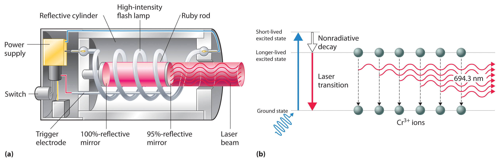(a) This cutaway view of a ruby laser shows the ruby rod, the flash lamp used to excite the Cr3+ ions in the ruby, and the totally and partially reflective mirrors. (b) This schematic drawing illustrates how light from the flash lamp excites the Cr3+ ions to a short-lived excited state, which is followed by decay to a longer-lived excited state that is responsible for the stimulated in-phase emission of light by the laser.
When used in a DVD player or a CD player, light emitted by a laser passes through a transparent layer of plastic on the CD and is reflected by an underlying aluminum layer, which contains pits or flat regions that were created when the CD was recorded. Differences in the frequencies of the transmitted and reflected light are detected by light-sensitive equipment that converts these differences into binary code, a series of 1s and 0s, which is translated electronically into recognizable sounds and images.
Atoms of individual elements emit light at only specific wavelengths, producing a line spectrum rather than the continuous spectrum of all wavelengths produced by a hot object. Niels Bohr explained the line spectrum of the hydrogen atom by assuming that the electron moved in circular orbits and that orbits with only certain radii were allowed. Lines in the spectrum were due to transitions in which an electron moved from a higher-energy orbit with a larger radius to a lower-energy orbit with smaller radius. The orbit closest to the nucleus represented the ground state of the atom and was most stable; orbits farther away were higher-energy excited states. Transitions from an excited state to a lower-energy state resulted in the emission of light with only a limited number of wavelengths. Bohr’s model could not, however, explain the spectra of atoms heavier than hydrogen.
Most light is polychromatic and contains light of many wavelengths. Light that has only a single wavelength is monochromatic and is produced by devices called lasers, which use transitions between two atomic energy levels to produce light in a very narrow range of wavelengths. Atoms can also absorb light of certain energies, resulting in a transition from the ground state or a lower-energy excited state to a higher-energy excited state. This produces an absorption spectrum, which has dark lines in the same position as the bright lines in the emission spectrum of an element.
Is the spectrum of the light emitted by isolated atoms of an element discrete or continuous? How do these spectra differ from those obtained by heating a bulk sample of a solid element? Explain your answers.
Explain why each element has a characteristic emission and absorption spectra. If spectral emissions had been found to be continuous rather than discrete, what would have been the implications for Bohr’s model of the atom?
Explain the differences between a ground state and an excited state. Describe what happens in the spectrum of a species when an electron moves from a ground state to an excited state. What happens in the spectrum when the electron falls from an excited state to a ground state?
What phenomenon causes a neon sign to have a characteristic color? If the emission spectrum of an element is constant, why do some neon signs have more than one color?
How is light from a laser different from the light emitted by a light source such as a light bulb? Describe how a laser produces light.
Using a Bohr model and the transition from n = 2 to n = 3 in an atom with a single electron, describe the mathematical relationship between an emission spectrum and an absorption spectrum. What is the energy of this transition? What does the sign of the energy value represent in this case? What range of light is associated with this transition?
If a hydrogen atom is excited from an n = 1 state to an n = 3 state, how much energy does this correspond to? Is this an absorption or an emission? What is the wavelength of the photon involved in this process? To what region of the electromagnetic spectrum does this correspond?
The hydrogen atom emits a photon with a 486 nm wavelength, corresponding to an electron decaying from the n = 4 level to which level? What is the color of the emission?
An electron in a hydrogen atom can decay from the n = 3 level to n = 2 level. What is the color of the emitted light? What is the energy of this transition?
Calculate the wavelength and energy of the photon that gives rise to the third line in order of increasing energy in the Lyman series in the emission spectrum of hydrogen. In what region of the spectrum does this wavelength occur? Describe qualitatively what the absorption spectrum looks like.
The wavelength of one of the lines in the Lyman series of hydrogen is 121 nm. In what region of the spectrum does this occur? To which electronic transition does this correspond?
The emission spectrum of helium is shown. What change in energy (ΔE) in kilojoules per mole gives rise to each line?
Removing an electron from solid potassium requires 222 kJ/mol. Would you expect to observe a photoelectric effect for potassium using a photon of blue light (λ = 485 nm)? What is the longest wavelength of energy capable of ejecting an electron from potassium? What is the corresponding color of light of this wavelength?
The binding energy of an electron is the energy needed to remove an electron from its lowest energy state. According to Bohr’s postulates, calculate the binding energy of an electron in a hydrogen atom in kilojoules per mole. What wavelength in nanometers is required to remove such an electron?
As a radio astronomer, you have observed spectral lines for hydrogen corresponding to a state with n = 320, and you would like to produce these lines in the laboratory. Is this feasible? Why or why not?
656 nm; red light
n = 2, blue-green light
97.2 nm, 2.04 × 10−18 J/photon, ultraviolet light, absorption spectrum is a single dark line at a wavelength of 97.2 nm
Violet: 390 nm, 307 kJ/mol photons; Blue-purple: 440 nm, 272 kJ/mol photons; Blue-green: 500 nm, 239 kJ/mol photons; Orange: 580 nm, 206 kJ/mol photons; Red: 650 nm, 184 kJ/mol photons
1313 kJ/mol, λ ≤ 91.1 nm
Einstein’s photons of light were individual packets of energy having many of the characteristics of particles. Recall that the collision of an electron (a particle) with a sufficiently energetic photon can eject a photoelectron from the surface of a metal. Any excess energy is transferred to the electron and is converted to the kinetic energy of the ejected electron. Einstein’s hypothesis that energy is concentrated in localized bundles, however, was in sharp contrast to the classical notion that energy is spread out uniformly in a wave. We now describe Einstein’s theory of the relationship between energy and mass, a theory that others built on to develop our current model of the atom.
Einstein initially assumed that photons had zero mass, which made them a peculiar sort of particle indeed. In 1905, however, he published his special theory of relativity, which related energy and mass according to the following equation:
Equation 6.13
According to this theory, a photon of wavelength λ and frequency ν has a nonzero mass, which is given as follows:
Equation 6.14
That is, light, which had always been regarded as a wave, also has properties typical of particles, a condition known as wave–particle dualityA principle that matter and energy have properties typical of both waves and particles.. Depending on conditions, light could be viewed as either a wave or a particle.
In 1922, the American physicist Arthur Compton (1892–1962) reported the results of experiments involving the collision of x-rays and electrons that supported the particle nature of light. At about the same time, a young French physics student, Louis de Broglie (1892–1972), began to wonder whether the converse was true: Could particles exhibit the properties of waves? In his PhD dissertation submitted to the Sorbonne in 1924, de Broglie proposed that a particle such as an electron could be described by a wave whose wavelength is given by
Equation 6.15
where h is Planck’s constant, m is the mass of the particle, and v is the velocity of the particle. This revolutionary idea was quickly confirmed by American physicists Clinton Davisson (1881–1958) and Lester Germer (1896–1971), who showed that beams of electrons, regarded as particles, were diffracted by a sodium chloride crystal in the same manner as x-rays, which were regarded as waves. It was proven experimentally that electrons do exhibit the properties of waves. For his work, de Broglie received the Nobel Prize in Physics in 1929.
If particles exhibit the properties of waves, why had no one observed them before? The answer lies in the numerator of de Broglie’s equation, which is an extremely small number. As you will calculate in Example 4, Planck’s constant (6.63 × 10−34 J·s) is so small that the wavelength of a particle with a large mass is too short (less than the diameter of an atomic nucleus) to be noticeable.
Calculate the wavelength of a baseball, which has a mass of 149 g and a speed of 100 mi/h.
Given: mass and speed of object
Asked for: wavelength
Strategy:
A Convert the speed of the baseball to the appropriate SI units: meters per second.
B Substitute values into Equation 6.15 and solve for the wavelength.
Solution:
The wavelength of a particle is given by λ = h/mv. We know that m = 0.149 kg, so all we need to find is the speed of the baseball:
B Recall that the joule is a derived unit, whose units are (kg·m2)/s2. Thus the wavelength of the baseball is
(You should verify that the units cancel to give the wavelength in meters.) Given that the diameter of the nucleus of an atom is approximately 10−14 m, the wavelength of the baseball is almost unimaginably small.
Exercise
Calculate the wavelength of a neutron that is moving at 3.00 × 103 m/s.
Answer: 1.32 Å, or 132 pm
As you calculated in Example 4, objects such as a baseball or a neutron have such short wavelengths that they are best regarded primarily as particles. In contrast, objects with very small masses (such as photons) have large wavelengths and can be viewed primarily as waves. Objects with intermediate masses, such as electrons, exhibit the properties of both particles and waves. Although we still usually think of electrons as particles, the wave nature of electrons is employed in an electron microscope, which has revealed most of what we know about the microscopic structure of living organisms and materials. Because the wavelength of an electron beam is much shorter than the wavelength of a beam of visible light, this instrument can resolve smaller details than a light microscope can (Figure 6.17 "A Comparison of Images Obtained Using a Light Microscope and an Electron Microscope").
Figure 6.17 A Comparison of Images Obtained Using a Light Microscope and an Electron Microscope
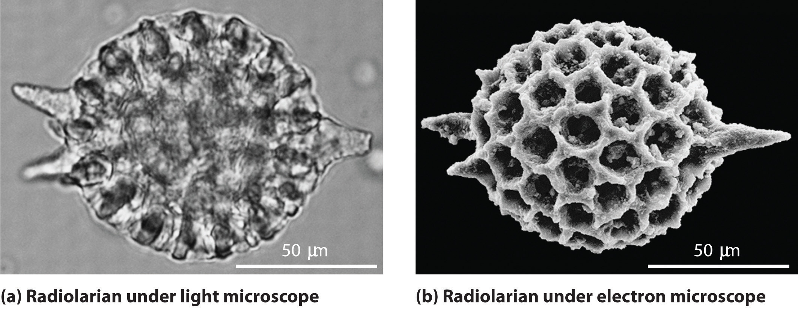Because of their shorter wavelength, high-energy electrons have a higher resolving power than visible light. Consequently, an electron microscope (b) is able to resolve finer details than a light microscope (a). (Radiolaria, which are shown here, are unicellular planktonic organisms.)
De Broglie also investigated why only certain orbits were allowed in Bohr’s model of the hydrogen atom. He hypothesized that the electron behaves like a standing waveA wave that does not travel in space., a wave that does not travel in space. An example of a standing wave is the motion of a string of a violin or guitar. When the string is plucked, it vibrates at certain fixed frequencies because it is fastened at both ends (Figure 6.18 "Standing Waves on a Vibrating String"). If the length of the string is L, then the lowest-energy vibration (the fundamentalThe lowest-energy standing wave.) has wavelength
Equation 6.16
Higher-energy vibrations (overtonesThe vibration of a standing wave that is higher in energy than the fundamental vibration.) are produced when the string is plucked more strongly; they have wavelengths given by
Equation 6.17
where n has any integral value. Thus the vibrational energy of the string is quantized, and only certain wavelengths and frequencies are possible. Notice in Figure 6.18 "Standing Waves on a Vibrating String" that all overtones have one or more nodesThe point where the amplitude of a wave is zero., points where the string does not move. The amplitude of the wave at a node is zero.
Figure 6.18 Standing Waves on a Vibrating String
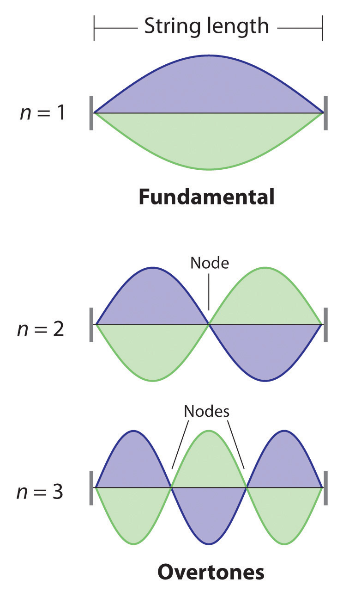The vibration with n = 1 is the fundamental and contains no nodes. Vibrations with higher values of n are called overtones; they contain n − 1 nodes.
Quantized vibrations and overtones containing nodes are not restricted to one-dimensional systems, such as strings. A two-dimensional surface, such as a drumhead, also has quantized vibrations. Similarly, when the ends of a string are joined to form a circle, the only allowed vibrations are those with wavelength
Equation 6.18
2πr = nλwhere r is the radius of the circle. De Broglie argued that Bohr’s allowed orbits could be understood if the electron behaved like a standing circular wave (Figure 6.19 "Standing Circular Wave and Destructive Interference"). The standing wave could exist only if the circumference of the circle was an integral multiple of the wavelength such that the propagated waves were all in phase, thereby increasing the net amplitudes and causing constructive interference. Otherwise, the propagated waves would be out of phase, resulting in a net decrease in amplitude and causing destructive interference. De Broglie’s idea explained Bohr’s allowed orbits and energy levels nicely: in the lowest energy level, corresponding to n = 1 in Equation 6.18, one complete wavelength would close the circle. Higher energy levels would have successively higher values of n with a corresponding number of nodes.
Standing waves are often observed on rivers, reservoirs, ponds, and lakes when seismic waves from an earthquake travel through the area. The waves are called seismic seiches, a term first used in 1955 when lake levels in England and Norway oscillated from side to side as a result of the Assam earthquake of 1950 in Tibet. They were first described in the Proceedings of the Royal Society in 1755 when they were seen in English harbors and ponds after a large earthquake in Lisbon, Portugal. Seismic seiches were also observed in many places in North America after the Alaska earthquake of March 28, 1964. Those occurring in western reservoirs lasted for two hours or longer, and amplitudes reached as high as nearly 6 ft along the Gulf Coast. The height of seiches is approximately proportional to the thickness of surface sediments; a deeper channel will produce a higher seiche.
Figure 6.19 Standing Circular Wave and Destructive Interference
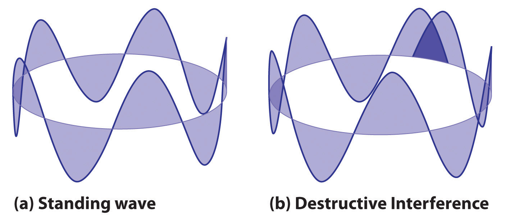(a) In a standing circular wave with n = 5, the circumference of the circle corresponds to exactly five wavelengths, which results in constructive interference of the wave with itself when overlapping occurs. (b) If the circumference of the circle is not equal to an integral multiple of wavelengths, then the wave does not overlap exactly with itself, and the resulting destructive interference will result in cancellation of the wave. Consequently, a standing wave cannot exist under these conditions.
As you will see, several of de Broglie’s ideas are retained in the modern theory of the electronic structure of the atom: the wave behavior of the electron, the concept of standing waves, and the presence of nodes that increase in number as the energy level increases. Unfortunately, his explanation also contains one major feature that we know to be incorrect: in the currently accepted model, the electron in a given orbit is not always at the same distance from the nucleus.
Because a wave is a disturbance that travels in space, it has no fixed position. One might therefore expect that it would also be hard to specify the exact position of a particle that exhibits wavelike behavior. This situation was described mathematically by the German physicist Werner Heisenberg (1901–1976; Nobel Prize in Physics, 1932), who related the position of a particle to its momentum. Referring to the electron, Heisenberg stated that “at every moment the electron has only an inaccurate position and an inaccurate velocity, and between these two inaccuracies there is this uncertainty relation.” Mathematically, the Heisenberg uncertainty principleA principle stating that the uncertainty in the position of a particle multiplied by the uncertainty in its momentum is greater than or equal to Planck’s constant divided by 4π: states that the uncertainty in the position of a particle (Δx) multiplied by the uncertainty in its momentum [Δ(mv)] is greater than or equal to Planck’s constant divided by 4π:
Equation 6.19
Because Planck’s constant is a very small number, the Heisenberg uncertainty principle is important only for particles such as electrons that have very low masses. These are the same particles predicted by de Broglie’s equation to have measurable wavelengths.
If the precise position x of a particle is known absolutely (Δx = 0), then the uncertainty in its momentum must be infinite:
Equation 6.20
Because the mass of the electron at rest (m) is both constant and accurately known, the uncertainty in Δ(mv) must be due to the Δv term, which would have to be infinitely large for Δ(mv) to equal infinity. That is, according to Equation 6.20, the more accurately we know the exact position of the electron (as Δx → 0), the less accurately we know the speed and the kinetic energy of the electron (1/2 mv2) because Δ(mv) → ∞. Conversely, the more accurately we know the precise momentum (and the energy) of the electron [as Δ(mv) → 0], then Δx → ∞ and we have no idea where the electron is.
Bohr’s model of the hydrogen atom violated the Heisenberg uncertainty principle by trying to specify simultaneously both the position (an orbit of a particular radius) and the energy (a quantity related to the momentum) of the electron. Moreover, given its mass and wavelike nature, the electron in the hydrogen atom could not possibly orbit the nucleus in a well-defined circular path as predicted by Bohr. You will see, however, that the most probable radius of the electron in the hydrogen atom is exactly the one predicted by Bohr’s model.
Calculate the minimum uncertainty in the position of the pitched baseball from Example 4 that has a mass of exactly 149 g and a speed of 100 ± 1 mi/h.
Given: mass and speed of object
Asked for: minimum uncertainty in its position
Strategy:
A Rearrange the inequality that describes the Heisenberg uncertainty principle (Equation 6.19) to solve for the minimum uncertainty in the position of an object (Δx).
B Find Δv by converting the velocity of the baseball to the appropriate SI units: meters per second.
C Substitute the appropriate values into the expression for the inequality and solve for Δx.
Solution:
A The Heisenberg uncertainty principle tells us that (Δx)[Δ(mv)] = h/4π. Rearranging the inequality gives
B We know that h = 6.626 × 10−34 J·s and m = 0.149 kg. Because there is no uncertainty in the mass of the baseball, Δ(mv) = mΔv and Δv = ±1 mi/h. We have
C Therefore,
Inserting the definition of a joule (1 J = 1 kg·m2/s2) gives
This is equal to 3.12 × 10−32 inches. We can safely say that if a batter misjudges the speed of a fastball by 1 mi/h (about 1%), he will not be able to blame Heisenberg’s uncertainty principle for striking out.
Exercise
Calculate the minimum uncertainty in the position of an electron traveling at one-third the speed of light, if the uncertainty in its speed is ±0.1%. Assume its mass to be equal to its mass at rest.
Answer: 6 × 10−10 m, or 0.6 nm (about the diameter of a benzene molecule)
Einstein’s relationship between mass and energy
De Broglie’s relationship between mass, speed, and wavelength
Heisenberg’s uncertainty principle
The modern model for the electronic structure of the atom is based on recognizing that an electron possesses particle and wave properties, the so-called wave–particle duality. Louis de Broglie showed that the wavelength of a particle is equal to Planck’s constant divided by the mass times the velocity of the particle. The electron in Bohr’s circular orbits could thus be described as a standing wave, one that does not move through space. Standing waves are familiar from music: the lowest-energy standing wave is the fundamental vibration, and higher-energy vibrations are overtones and have successively more nodes, points where the amplitude of the wave is always zero. Werner Heisenberg’s uncertainty principle states that it is impossible to precisely describe both the location and the speed of particles that exhibit wavelike behavior.
Explain what is meant by each term and illustrate with a sketch:
How does Einstein’s theory of relativity illustrate the wave–particle duality of light? What properties of light can be explained by a wave model? What properties can be explained by a particle model?
In the modern theory of the electronic structure of the atom, which of de Broglie’s ideas have been retained? Which proved to be incorrect?
According to Bohr, what is the relationship between an atomic orbit and the energy of an electron in that orbit? Is Bohr’s model of the atom consistent with Heisenberg’s uncertainty principle? Explain your answer.
The development of ideas frequently builds on the work of predecessors. Complete the following chart by filling in the names of those responsible for each theory shown.
How much heat is generated by shining a carbon dioxide laser with a wavelength of 1.065 μm on a 68.95 kg sample of water if 1.000 mol of photons is absorbed and converted to heat? Is this enough heat to raise the temperature of the water 4°C?
Show the mathematical relationship between energy and mass and between wavelength and mass. What is the effect of doubling the
What is the de Broglie wavelength of a 39 g bullet traveling at 1020 m/s ± 10 m/s? What is the minimum uncertainty in the bullet’s position?
What is the de Broglie wavelength of a 6800 tn aircraft carrier traveling at 18 ± 0.1 knots (1 knot = 1.15 mi/h)? What is the minimum uncertainty in its position?
Calculate the mass of a particle if it is traveling at 2.2 × 106 m/s and has a frequency of 6.67 × 107 Hz. If the uncertainty in the velocity is known to be 0.1%, what is the minimum uncertainty in the position of the particle?
Determine the wavelength of a 2800 lb automobile traveling at 80 mi/h ± 3%. How does this compare with the diameter of the nucleus of an atom? You are standing 3 in. from the edge of the highway. What is the minimum uncertainty in the position of the automobile in inches?
E = 112.3 kJ, ΔT = 0.3893°C, over ten times more light is needed for a 4.0°C increase in temperature
1.7 × 10−35 m, uncertainty in position is ≥ 1.4 × 10−34 m
9.1 × 10−39 kg, uncertainty in position ≥ 2.6 m
The paradox described by Heisenberg’s uncertainty principle and the wavelike nature of subatomic particles such as the electron made it impossible to use the equations of classical physics to describe the motion of electrons in atoms. Scientists needed a new approach that took the wave behavior of the electron into account. In 1926, an Austrian physicist, Erwin Schrödinger (1887–1961; Nobel Prize in Physics, 1933), developed wave mechanics, a mathematical technique that describes the relationship between the motion of a particle that exhibits wavelike properties (such as an electron) and its allowed energies. In doing so, Schrödinger developed the theory of quantum mechanicsA theory developed by Erwin Schrödinger that describes the energies and spatial distributions of electrons in atoms and molecules., which is used today to describe the energies and spatial distributions of electrons in atoms and molecules.
Schrödinger’s unconventional approach to atomic theory was typical of his unconventional approach to life. He was notorious for his intense dislike of memorizing data and learning from books. When Hitler came to power in Germany, Schrödinger escaped to Italy. He then worked at Princeton University in the United States but eventually moved to the Institute for Advanced Studies in Dublin, Ireland, where he remained until his retirement in 1955.
Although quantum mechanics uses sophisticated mathematics, you do not need to understand the mathematical details to follow our discussion of its general conclusions. We focus on the properties of the wave functions that are the solutions of Schrödinger’s equations.
A wave function (Ψ)A mathematical function that relates the location of an electron at a given point in space to the amplitude of its wave, which corresponds to its energy.Ψ is the uppercase Greek psi. is a mathematical function that relates the location of an electron at a given point in space (identified by x, y, and z coordinates) to the amplitude of its wave, which corresponds to its energy. Thus each wave function is associated with a particular energy E. The properties of wave functions derived from quantum mechanics are summarized here:
Figure 6.20 The Four Variables (Latitude, Longitude, Depth, and Time) Required to Precisely Locate an Object

If you are the captain of a ship trying to intercept an enemy submarine, you need to deliver your depth charge to the right location at the right time.
Figure 6.21 Probability of Finding the Electron in the Ground State of the Hydrogen Atom at Different Points in Space

(a) The density of the dots shows electron probability. (b) In this plot of Ψ2 versus r for the ground state of the hydrogen atom, the electron probability density is greatest at r = 0 (the nucleus) and falls off with increasing r. Because the line never actually reaches the horizontal axis, the probability of finding the electron at very large values of r is very small but not zero.
Schrödinger’s approach uses three quantum numbers (n, l, and ml) to specify any wave function. The quantum numbers provide information about the spatial distribution of an electron. Although n can be any positive integer, only certain values of l and ml are allowed for a given value of n.
The principal quantum number (n)One of three quantum numbers that tells the average relative distance of an electron from the nucleus. tells the average relative distance of an electron from the nucleus:
Equation 6.21
n = 1, 2, 3, 4,…As n increases for a given atom, so does the average distance of an electron from the nucleus. A negatively charged electron that is, on average, closer to the positively charged nucleus is attracted to the nucleus more strongly than an electron that is farther out in space. This means that electrons with higher values of n are easier to remove from an atom. All wave functions that have the same value of n are said to constitute a principal shellAll the wave functions that have the same value of because those electrons have similar average distances from the nucleus. because those electrons have similar average distances from the nucleus. As you will see, the principal quantum number n corresponds to the n used by Bohr to describe electron orbits and by Rydberg to describe atomic energy levels.
The second quantum number is often called the azimuthal quantum number (l)One of three quantum numbers that discribes the shape of the region of space occupied by an electron.. The value of l describes the shape of the region of space occupied by the electron. The allowed values of l depend on the value of n and can range from 0 to n − 1:
Equation 6.22
l = 0, 1, 2,…, n − 1For example, if n = 1, l can be only 0; if n = 2, l can be 0 or 1; and so forth. For a given atom, all wave functions that have the same values of both n and l form a subshellA group of wave functions that have the same values of and . The regions of space occupied by electrons in the same subshell usually have the same shape, but they are oriented differently in space.
The third quantum number is the magnetic quantum number (ml)One of three quantum numbers that describes the orientation of the region of space occupied by an electron with respect to an applied magnetic field.. The value of ml describes the orientation of the region in space occupied by an electron with respect to an applied magnetic field. The allowed values of ml depend on the value of l: ml can range from −l to l in integral steps:
Equation 6.23
ml = −l, −l + 1,…, 0,…, l − 1, lFor example, if l = 0, ml can be only 0; if l = 1, ml can be −1, 0, or +1; and if l = 2, ml can be −2, −1, 0, +1, or +2.
Each wave function with an allowed combination of n, l, and ml values describes an atomic orbitalA wave function with an allowed combination of , , and quantum numbers., a particular spatial distribution for an electron. For a given set of quantum numbers, each principal shell has a fixed number of subshells, and each subshell has a fixed number of orbitals.
How many subshells and orbitals are contained within the principal shell with n = 4?
Given: value of n
Asked for: number of subshells and orbitals in the principal shell
Strategy:
A Given n = 4, calculate the allowed values of l. From these allowed values, count the number of subshells.
B For each allowed value of l, calculate the allowed values of ml. The sum of the number of orbitals in each subshell is the number of orbitals in the principal shell.
Solution:
A We know that l can have all integral values from 0 to n − 1. If n = 4, then l can equal 0, 1, 2, or 3. Because the shell has four values of l, it has four subshells, each of which will contain a different number of orbitals, depending on the allowed values of ml.
B For l = 0, ml can be only 0, and thus the l = 0 subshell has only one orbital. For l = 1, ml can be 0 or ±1; thus the l = 1 subshell has three orbitals. For l = 2, ml can be 0, ±1, or ±2, so there are five orbitals in the l = 2 subshell. The last allowed value of l is l = 3, for which ml can be 0, ±1, ±2, or ±3, resulting in seven orbitals in the l = 3 subshell. The total number of orbitals in the n = 4 principal shell is the sum of the number of orbitals in each subshell and is equal to n2:
Exercise
How many subshells and orbitals are in the principal shell with n = 3?
Answer: three subshells; nine orbitals
Rather than specifying all the values of n and l every time we refer to a subshell or an orbital, chemists use an abbreviated system with lowercase letters to denote the value of l for a particular subshell or orbital:
| l = | 0 | 1 | 2 | 3 |
| Designation | s | p | d | f |
The principal quantum number is named first, followed by the letter s, p, d, or f as appropriate. These orbital designations are derived from corresponding spectroscopic characteristics: sharp, principle, diffuse, and fundamental. A 1s orbital has n = 1 and l = 0; a 2p subshell has n = 2 and l = 1 (and has three 2p orbitals, corresponding to ml = −1, 0, and +1); a 3d subshell has n = 3 and l = 2 (and has five 3d orbitals, corresponding to ml = −2, −1, 0, +1, and +2); and so forth.
We can summarize the relationships between the quantum numbers and the number of subshells and orbitals as follows (Table 6.3 "Values of "):
Each principal shell has n subshells, and each subshell has 2l + 1 orbitals.
Table 6.3 Values of n, l, and ml through n = 4
| n | l | Subshell Designation | ml | Number of Orbitals in Subshell | Number of Orbitals in Shell |
|---|---|---|---|---|---|
| 1 | 0 | 1s | 0 | 1 | 1 |
| 2 | 0 | 2s | 0 | 1 | 4 |
| 1 | 2p | −1, 0, 1 | 3 | ||
| 3 | 0 | 3s | 0 | 1 | 9 |
| 1 | 3p | −1, 0, 1 | 3 | ||
| 2 | 3d | −2, −1, 0, 1, 2 | 5 | ||
| 4 | 0 | 4s | 0 | 1 | 16 |
| 1 | 4p | −1, 0, 1 | 3 | ||
| 2 | 4d | −2, −1, 0, 1, 2 | 5 | ||
| 3 | 4f | −3, −2, −1, 0, 1, 2, 3 | 7 |
An orbital is the quantum mechanical refinement of Bohr’s orbit. In contrast to his concept of a simple circular orbit with a fixed radius, orbitals are mathematically derived regions of space with different probabilities of having an electron.
One way of representing electron probability distributions was illustrated in Figure 6.21 "Probability of Finding the Electron in the Ground State of the Hydrogen Atom at Different Points in Space" for the 1s orbital of hydrogen. Because Ψ2 gives the probability of finding an electron in a given volume of space (such as a cubic picometer), a plot of Ψ2 versus distance from the nucleus (r) is a plot of the probability density. The 1s orbital is spherically symmetrical, so the probability of finding a 1s electron at any given point depends only on its distance from the nucleus. The probability density is greatest at r = 0 (at the nucleus) and decreases steadily with increasing distance. At very large values of r, the electron probability density is very small but not zero.
In contrast, we can calculate the radial probability (the probability of finding a 1s electron at a distance r from the nucleus) by adding together the probabilities of an electron being at all points on a series of x spherical shells of radius r1, r2, r3,…, rx − 1, rx. In effect, we are dividing the atom into very thin concentric shells, much like the layers of an onion (part (a) in Figure 6.22 "Most Probable Radius for the Electron in the Ground State of the Hydrogen Atom"), and calculating the probability of finding an electron on each spherical shell. Recall that the electron probability density is greatest at r = 0 (part (b) in Figure 6.22 "Most Probable Radius for the Electron in the Ground State of the Hydrogen Atom"), so the density of dots is greatest for the smallest spherical shells in part (a) in Figure 6.22 "Most Probable Radius for the Electron in the Ground State of the Hydrogen Atom". In contrast, the surface area of each spherical shell is equal to 4πr2, which increases very rapidly with increasing r (part (c) in Figure 6.22 "Most Probable Radius for the Electron in the Ground State of the Hydrogen Atom"). Because the surface area of the spherical shells increases more rapidly with increasing r than the electron probability density decreases, the plot of radial probability has a maximum at a particular distance (part (d) in Figure 6.22 "Most Probable Radius for the Electron in the Ground State of the Hydrogen Atom"). Most important, when r is very small, the surface area of a spherical shell is so small that the total probability of finding an electron close to the nucleus is very low; at the nucleus, the electron probability vanishes (part (d) in Figure 6.22 "Most Probable Radius for the Electron in the Ground State of the Hydrogen Atom").
Figure 6.22 Most Probable Radius for the Electron in the Ground State of the Hydrogen Atom

(a) Imagine dividing the atom’s total volume into very thin concentric shells as shown in the onion drawing. (b) A plot of electron probability density Ψ2 versus r shows that the electron probability density is greatest at r = 0 and falls off smoothly with increasing r. The density of the dots is therefore greatest in the innermost shells of the onion. (c) The surface area of each shell, given by 4πr2, increases rapidly with increasing r. (d) If we count the number of dots in each spherical shell, we obtain the total probability of finding the electron at a given value of r. Because the surface area of each shell increases more rapidly with increasing r than the electron probability density decreases, a plot of electron probability versus r (the radial probability) shows a peak. This peak corresponds to the most probable radius for the electron, 52.9 pm, which is exactly the radius predicted by Bohr’s model of the hydrogen atom.
For the hydrogen atom, the peak in the radial probability plot occurs at r = 0.529 Å (52.9 pm), which is exactly the radius calculated by Bohr for the n = 1 orbit. Thus the most probable radius obtained from quantum mechanics is identical to the radius calculated by classical mechanics. In Bohr’s model, however, the electron was assumed to be at this distance 100% of the time, whereas in the Schrödinger model, it is at this distance only some of the time. The difference between the two models is attributable to the wavelike behavior of the electron and the Heisenberg uncertainty principle.
Figure 6.23 "Probability Densities for the 1" compares the electron probability densities for the hydrogen 1s, 2s, and 3s orbitals. Note that all three are spherically symmetrical. For the 2s and 3s orbitals, however (and for all other s orbitals as well), the electron probability density does not fall off smoothly with increasing r. Instead, a series of minima and maxima are observed in the radial probability plots (part (c) in Figure 6.23 "Probability Densities for the 1"). The minima correspond to spherical nodes (regions of zero electron probability), which alternate with spherical regions of nonzero electron probability.
Figure 6.23 Probability Densities for the 1s, 2s, and 3s Orbitals of the Hydrogen Atom

(a) The electron probability density in any plane that contains the nucleus is shown. Note the presence of circular regions, or nodes, where the probability density is zero. (b) Contour surfaces enclose 90% of the electron probability, which illustrates the different sizes of the 1s, 2s, and 3s orbitals. The cutaway drawings give partial views of the internal spherical nodes. The orange color corresponds to regions of space where the phase of the wave function is positive, and the blue color corresponds to regions of space where the phase of the wave function is negative. (c) In these plots of electron probability as a function of distance from the nucleus (r) in all directions (radial probability), the most probable radius increases as n increases, but the 2s and 3s orbitals have regions of significant electron probability at small values of r.
Three things happen to s orbitals as n increases (Figure 6.23 "Probability Densities for the 1"):
Orbitals are generally drawn as three-dimensional surfaces that enclose 90% of the electron densityElectron distributions that are represented as standing waves., as was shown for the hydrogen 1s, 2s, and 3s orbitals in part (b) in Figure 6.23 "Probability Densities for the 1". Although such drawings show the relative sizes of the orbitals, they do not normally show the spherical nodes in the 2s and 3s orbitals because the spherical nodes lie inside the 90% surface. Fortunately, the positions of the spherical nodes are not important for chemical bonding.
Only s orbitals are spherically symmetrical. As the value of l increases, the number of orbitals in a given subshell increases, and the shapes of the orbitals become more complex. Because the 2p subshell has l = 1, with three values of ml (−1, 0, and +1), there are three 2p orbitals.
Figure 6.24 Electron Probability Distribution for a Hydrogen 2p Orbital

The nodal plane of zero electron density separates the two lobes of the 2p orbital. As in Figure 6.23 "Probability Densities for the 1", the colors correspond to regions of space where the phase of the wave function is positive (orange) and negative (blue).
The electron probability distribution for one of the hydrogen 2p orbitals is shown in Figure 6.24 "Electron Probability Distribution for a Hydrogen 2". Because this orbital has two lobes of electron density arranged along the z axis, with an electron density of zero in the xy plane (i.e., the xy plane is a nodal plane), it is a 2pz orbital. As shown in Figure 6.25 "The Three Equivalent 2", the other two 2p orbitals have identical shapes, but they lie along the x axis (2px) and y axis (2py), respectively. Note that each p orbital has just one nodal plane. In each case, the phase of the wave function for each of the 2p orbitals is positive for the lobe that points along the positive axis and negative for the lobe that points along the negative axis. It is important to emphasize that these signs correspond to the phase of the wave that describes the electron motion, not to positive or negative charges.
Figure 6.25 The Three Equivalent 2p Orbitals of the Hydrogen Atom

The surfaces shown enclose 90% of the total electron probability for the 2px, 2py, and 2pz orbitals. Each orbital is oriented along the axis indicated by the subscript and a nodal plane that is perpendicular to that axis bisects each 2p orbital. The phase of the wave function is positive (orange) in the region of space where x, y, or z is positive and negative (blue) where x, y, or z is negative.
Just as with the s orbitals, the size and complexity of the p orbitals for any atom increase as the principal quantum number n increases. The shapes of the 90% probability surfaces of the 3p, 4p, and higher-energy p orbitals are, however, essentially the same as those shown in Figure 6.25 "The Three Equivalent 2".
Subshells with l = 2 have five d orbitals; the first principal shell to have a d subshell corresponds to n = 3. The five d orbitals have ml values of −2, −1, 0, +1, and +2.
Figure 6.26 The Five Equivalent 3d Orbitals of the Hydrogen Atom

The surfaces shown enclose 90% of the total electron probability for the five hydrogen 3d orbitals. Four of the five 3d orbitals consist of four lobes arranged in a plane that is intersected by two perpendicular nodal planes. These four orbitals have the same shape but different orientations. The fifth 3d orbital, , has a distinct shape even though it is mathematically equivalent to the others. The phase of the wave function for the different lobes is indicated by color: orange for positive and blue for negative.
The hydrogen 3d orbitals, shown in Figure 6.26 "The Five Equivalent 3", have more complex shapes than the 2p orbitals. All five 3d orbitals contain two nodal surfaces, as compared to one for each p orbital and zero for each s orbital. In three of the d orbitals, the lobes of electron density are oriented between the x and y, x and z, and y and z planes; these orbitals are referred to as the 3dxy, 3dxz, and 3dyz orbitals, respectively. A fourth d orbital has lobes lying along the x and y axes; this is the orbital. The fifth 3d orbital, called the orbital, has a unique shape: it looks like a 2pz orbital combined with an additional doughnut of electron probability lying in the xy plane. Despite its peculiar shape, the orbital is mathematically equivalent to the other four and has the same energy. In contrast to p orbitals, the phase of the wave function for d orbitals is the same for opposite pairs of lobes. As shown in Figure 6.26 "The Five Equivalent 3", the phase of the wave function is positive for the two lobes of the orbital that lie along the z axis, whereas the phase of the wave function is negative for the doughnut of electron density in the xy plane. Like the s and p orbitals, as n increases, the size of the d orbitals increases, but the overall shapes remain similar to those depicted in Figure 6.26 "The Five Equivalent 3".
Principal shells with n = 4 can have subshells with l = 3 and ml values of −3, −2, −1, 0, +1, +2, and +3. These subshells consist of seven f orbitals. Each f orbital has three nodal surfaces, so their shapes are complex. Because f orbitals are not particularly important for our purposes, we do not discuss them further, and orbitals with higher values of l are not discussed at all.
Although we have discussed the shapes of orbitals, we have said little about their comparative energies. We begin our discussion of orbital energiesA particular energy associated with a given set of quantum numbers. by considering atoms or ions with only a single electron (such as H or He+).
The relative energies of the atomic orbitals with n ≤ 4 for a hydrogen atom are plotted in Figure 6.27 "Orbital Energy Level Diagram for the Hydrogen Atom"; note that the orbital energies depend on only the principal quantum number n. Consequently, the energies of the 2s and 2p orbitals of hydrogen are the same; the energies of the 3s, 3p, and 3d orbitals are the same; and so forth. The orbital energies obtained for hydrogen using quantum mechanics are exactly the same as the allowed energies calculated by Bohr. In contrast to Bohr’s model, however, which allowed only one orbit for each energy level, quantum mechanics predicts that there are 4 orbitals with different electron density distributions in the n = 2 principal shell (one 2s and three 2p orbitals), 9 in the n = 3 principal shell, and 16 in the n = 4 principal shell.The different values of l and ml for the individual orbitals within a given principal shell are not important for understanding the emission or absorption spectra of the hydrogen atom under most conditions, but they do explain the splittings of the main lines that are observed when hydrogen atoms are placed in a magnetic field. As we have just seen, however, quantum mechanics also predicts that in the hydrogen atom, all orbitals with the same value of n (e.g., the three 2p orbitals) are degenerateHaving the same energy., meaning that they have the same energy. Figure 6.27 "Orbital Energy Level Diagram for the Hydrogen Atom" shows that the energy levels become closer and closer together as the value of n increases, as expected because of the 1/n2 dependence of orbital energies.
Figure 6.27 Orbital Energy Level Diagram for the Hydrogen Atom

Each box corresponds to one orbital. Note that the difference in energy between orbitals decreases rapidly with increasing values of n.
The energies of the orbitals in any species with only one electron can be calculated by a minor variation of Bohr’s equation (Equation 6.9), which can be extended to other single-electron species by incorporating the nuclear charge Z (the number of protons in the nucleus):
Equation 6.24
In general, both energy and radius decrease as the nuclear charge increases. Thus the most stable orbitals (those with the lowest energy) are those closest to the nucleus. For example, in the ground state of the hydrogen atom, the single electron is in the 1s orbital, whereas in the first excited state, the atom has absorbed energy and the electron has been promoted to one of the n = 2 orbitals. In ions with only a single electron, the energy of a given orbital depends on only n, and all subshells within a principal shell, such as the px, py, and pz orbitals, are degenerate.
For an atom or an ion with only a single electron, we can calculate the potential energy by considering only the electrostatic attraction between the positively charged nucleus and the negatively charged electron. When more than one electron is present, however, the total energy of the atom or the ion depends not only on attractive electron-nucleus interactions but also on repulsive electron-electron interactions. When there are two electrons, the repulsive interactions depend on the positions of both electrons at a given instant, but because we cannot specify the exact positions of the electrons, it is impossible to exactly calculate the repulsive interactions. Consequently, we must use approximate methods to deal with the effect of electron-electron repulsions on orbital energies.
If an electron is far from the nucleus (i.e., if the distance r between the nucleus and the electron is large), then at any given moment, most of the other electrons will be between that electron and the nucleus. Hence the electrons will cancel a portion of the positive charge of the nucleus and thereby decrease the attractive interaction between it and the electron farther away. As a result, the electron farther away experiences an effective nuclear charge (Zeff)The nuclear charge an electron actually experiences because of shielding from other electrons closer to the nucleus. that is less than the actual nuclear charge Z. This effect is called electron shieldingThe effect by which electrons closer to the nucleus neutralize a portion of the positive charge of the nucleus and thereby decrease the attractive interaction between the nucleus and an electron father away.. As the distance between an electron and the nucleus approaches infinity, Zeff approaches a value of 1 because all the other (Z − 1) electrons in the neutral atom are, on the average, between it and the nucleus. If, on the other hand, an electron is very close to the nucleus, then at any given moment most of the other electrons are farther from the nucleus and do not shield the nuclear charge. At r ≈ 0, the positive charge experienced by an electron is approximately the full nuclear charge, or Zeff ≈ Z. At intermediate values of r, the effective nuclear charge is somewhere between 1 and Z: 1 ≤ Zeff ≤ Z. Thus the actual Zeff experienced by an electron in a given orbital depends not only on the spatial distribution of the electron in that orbital but also on the distribution of all the other electrons present. This leads to large differences in Zeff for different elements, as shown in Figure 6.28 "Relationship between the Effective Nuclear Charge " for the elements of the first three rows of the periodic table. Notice that only for hydrogen does Zeff = Z, and only for helium are Zeff and Z comparable in magnitude.
Figure 6.28 Relationship between the Effective Nuclear Charge Zeff and the Atomic Number Z for the Outer Electrons of the Elements of the First Three Rows of the Periodic Table

Except for hydrogen, Zeff is always less than Z, and Zeff increases from left to right as you go across a row.
The energies of the different orbitals for a typical multielectron atom are shown in Figure 6.29 "Orbital Energy Level Diagram for a Typical Multielectron Atom". Within a given principal shell of a multielectron atom, the orbital energies increase with increasing l. An ns orbital always lies below the corresponding np orbital, which in turn lies below the nd orbital. These energy differences are caused by the effects of shielding and penetration, the extent to which a given orbital lies inside other filled orbitals. As shown in Figure 6.30 "Orbital Penetration", for example, an electron in the 2s orbital penetrates inside a filled 1s orbital more than an electron in a 2p orbital does. Hence in an atom with a filled 1s orbital, the Zeff experienced by a 2s electron is greater than the Zeff experienced by a 2p electron. Consequently, the 2s electron is more tightly bound to the nucleus and has a lower energy, consistent with the order of energies shown in Figure 6.29 "Orbital Energy Level Diagram for a Typical Multielectron Atom".
Due to electron shielding, Zeff increases more rapidly going across a row of the periodic table than going down a column.
Figure 6.29 Orbital Energy Level Diagram for a Typical Multielectron Atom

Because of the effects of shielding and the different radial distributions of orbitals with the same value of n but different values of l, the different subshells are not degenerate in a multielectron atom. (Compare this with Figure 6.27 "Orbital Energy Level Diagram for the Hydrogen Atom".) For a given value of n, the ns orbital is always lower in energy than the np orbitals, which are lower in energy than the nd orbitals, and so forth. As a result, some subshells with higher principal quantum numbers are actually lower in energy than subshells with a lower value of n; for example, the 4s orbital is lower in energy than the 3d orbitals for most atoms.
Figure 6.30 Orbital Penetration

A comparison of the radial probability distribution of the 2s and 2p orbitals for various states of the hydrogen atom shows that the 2s orbital penetrates inside the 1s orbital more than the 2p orbital does. Consequently, when an electron is in the small inner lobe of the 2s orbital, it experiences a relatively large value of Zeff, which causes the energy of the 2s orbital to be lower than the energy of the 2p orbital.
Notice in Figure 6.29 "Orbital Energy Level Diagram for a Typical Multielectron Atom" that the difference in energies between subshells can be so large that the energies of orbitals from different principal shells can become approximately equal. For example, the energy of the 3d orbitals in most atoms is actually between the energies of the 4s and the 4p orbitals.
Because of wave–particle duality, scientists must deal with the probability of an electron being at a particular point in space. To do so required the development of quantum mechanics, which uses wave functions (Ψ) to describe the mathematical relationship between the motion of electrons in atoms and molecules and their energies. Wave functions have five important properties: (1) the wave function uses three variables (Cartesian axes x, y, and z) to describe the position of an electron; (2) the magnitude of the wave function is proportional to the intensity of the wave; (3) the probability of finding an electron at a given point is proportional to the square of the wave function at that point, leading to a distribution of probabilities in space that is often portrayed as an electron density plot; (4) describing electron distributions as standing waves leads naturally to the existence of sets of quantum numbers characteristic of each wave function; and (5) each spatial distribution of the electron described by a wave function with a given set of quantum numbers has a particular energy.
Quantum numbers provide important information about the energy and spatial distribution of an electron. The principal quantum number n can be any positive integer; as n increases for an atom, the average distance of the electron from the nucleus also increases. All wave functions with the same value of n constitute a principal shell in which the electrons have similar average distances from the nucleus. The azimuthal quantum number l can have integral values between 0 and n − 1; it describes the shape of the electron distribution. Wave functions that have the same values of both n and l constitute a subshell, corresponding to electron distributions that usually differ in orientation rather than in shape or average distance from the nucleus. The magnetic quantum number ml can have 2l + 1 integral values, ranging from −l to +l, and describes the orientation of the electron distribution. Each wave function with a given set of values of n, l, and ml describes a particular spatial distribution of an electron in an atom, an atomic orbital.
The four chemically important types of atomic orbital correspond to values of l = 0, 1, 2, and 3. Orbitals with l = 0 are s orbitals and are spherically symmetrical, with the greatest probability of finding the electron occurring at the nucleus. All orbitals with values of n > 1 and l = 0 contain one or more nodes. Orbitals with l = 1 are p orbitals and contain a nodal plane that includes the nucleus, giving rise to a dumbbell shape. Orbitals with l = 2 are d orbitals and have more complex shapes with at least two nodal surfaces. Orbitals with l = 3 are f orbitals, which are still more complex.
Because its average distance from the nucleus determines the energy of an electron, each atomic orbital with a given set of quantum numbers has a particular energy associated with it, the orbital energy. In atoms or ions with only a single electron, all orbitals with the same value of n have the same energy (they are degenerate), and the energies of the principal shells increase smoothly as n increases. An atom or ion with the electron(s) in the lowest-energy orbital(s) is said to be in its ground state, whereas an atom or ion in which one or more electrons occupy higher-energy orbitals is said to be in an excited state. The calculation of orbital energies in atoms or ions with more than one electron (multielectron atoms or ions) is complicated by repulsive interactions between the electrons. The concept of electron shielding, in which intervening electrons act to reduce the positive nuclear charge experienced by an electron, allows the use of hydrogen-like orbitals and an effective nuclear charge (Zeff) to describe electron distributions in more complex atoms or ions. The degree to which orbitals with different values of l and the same value of n overlap or penetrate filled inner shells results in slightly different energies for different subshells in the same principal shell in most atoms.
Why does an electron in an orbital with n = 1 in a hydrogen atom have a lower energy than a free electron (n = ∞)?
What four variables are required to fully describe the position of any object in space? In quantum mechanics, one of these variables is not explicitly considered. Which one and why?
Chemists generally refer to the square of the wave function rather than to the wave function itself. Why?
Orbital energies of species with only one electron are defined by only one quantum number. Which one? In such a species, is the energy of an orbital with n = 2 greater than, less than, or equal to the energy of an orbital with n = 4? Justify your answer.
In each pair of subshells for a hydrogen atom, which has the higher energy? Give the principal and the azimuthal quantum number for each pair.
What is the relationship between the energy of an orbital and its average radius? If an electron made a transition from an orbital with an average radius of 846.4 pm to an orbital with an average radius of 476.1 pm, would an emission spectrum or an absorption spectrum be produced? Why?
In making a transition from an orbital with a principal quantum number of 4 to an orbital with a principal quantum number of 7, does the electron of a hydrogen atom emit or absorb a photon of energy? What would be the energy of the photon? To what region of the electromagnetic spectrum does this energy correspond?
What quantum number defines each of the following?
In an attempt to explain the properties of the elements, Niels Bohr initially proposed electronic structures for several elements with orbits holding a certain number of electrons, some of which are in the following table:
| Element | Number of Electrons | Electrons in orbits with n = | |||
|---|---|---|---|---|---|
| 4 | 3 | 2 | 1 | ||
| H | 1 | 1 | |||
| He | 2 | 2 | |||
| Ne | 10 | 8 | 2 | ||
| Ar | 18 | 8 | 8 | 2 | |
| Li | 3 | 1 | 2 | ||
| Na | 11 | 1 | 8 | 2 | |
| K | 19 | 1 | 8 | 8 | 2 |
| Be | 4 | 2 | 2 | ||
What happens to the energy of a given orbital as the nuclear charge Z of a species increases? In a multielectron atom and for a given nuclear charge, the Zeff experienced by an electron depends on its value of l. Why?
The electron density of a particular atom is divided into two general regions. Name these two regions and describe what each represents.
As the principal quantum number increases, the energy difference between successive energy levels decreases. Why? What would happen to the electron configurations of the transition metals if this decrease did not occur?
Describe the relationship between electron shielding and Zeff on the outermost electrons of an atom. Predict how chemical reactivity is affected by a decreased effective nuclear charge.
If a given atom or ion has a single electron in each of the following subshells, which electron is easier to remove?
How many subshells are possible for n = 3? What are they?
How many subshells are possible for n = 5? What are they?
What value of l corresponds to a d subshell? How many orbitals are in this subshell?
What value of l corresponds to an f subshell? How many orbitals are in this subshell?
State the number of orbitals and electrons that can occupy each subshell.
State the number of orbitals and electrons that can occupy each subshell.
How many orbitals and subshells are found within the principal shell n = 6? How do these orbital energies compare with those for n = 4?
How many nodes would you expect a 4p orbital to have? A 5s orbital?
A p orbital is found to have one node in addition to the nodal plane that bisects the lobes. What would you predict to be the value of n? If an s orbital has two nodes, what is the value of n?
Three subshells, with l = 0 (s), l = 1 (p), and l = 2 (d).
A d subshell has l = 2 and contains 5 orbitals.
A principal shell with n = 6 contains six subshells, with l = 0, 1, 2, 3, 4, and 5, respectively. These subshells contain 1, 3, 5, 7, 9, and 11 orbitals, respectively, for a total of 36 orbitals. The energies of the orbitals with n = 6 are higher than those of the corresponding orbitals with the same value of l for n = 4.
Now you can use the information you learned in Section 6.5 "Atomic Orbitals and Their Energies" to determine the electronic structure of every element in the periodic table. The process of describing each atom’s electronic structure consists, essentially, of beginning with hydrogen and adding one proton and one electron at a time to create the next heavier element in the table.All stable nuclei other than hydrogen also contain one or more neutrons. Because neutrons have no electrical charge, however, they can be ignored in the following discussion. Before demonstrating how to do this, however, we must introduce the concept of electron spin and the Pauli principle.
When scientists analyzed the emission and absorption spectra of the elements more closely, they saw that for elements having more than one electron, nearly all the lines in the spectra were actually pairs of very closely spaced lines. Because each line represents an energy level available to electrons in the atom, there are twice as many energy levels available as would be predicted solely based on the quantum numbers n, l, and ml. Scientists also discovered that applying a magnetic field caused the lines in the pairs to split farther apart. In 1925, two graduate students in physics in the Netherlands, George Uhlenbeck (1900–1988) and Samuel Goudsmit (1902–1978), proposed that the splittings were caused by an electron spinning about its axis, much as Earth spins about its axis. When an electrically charged object spins, it produces a magnetic moment parallel to the axis of rotation, making it behave like a magnet. Although the electron cannot be viewed solely as a particle, spinning or otherwise, it is indisputable that it does have a magnetic moment. This magnetic moment is called electron spinThe magnetic moment that results when an electron spins. Electrons have two possible orientations (spin up and spin down), which are described by a fourth quantum number (ms)..
Figure 6.31 Electron Spin
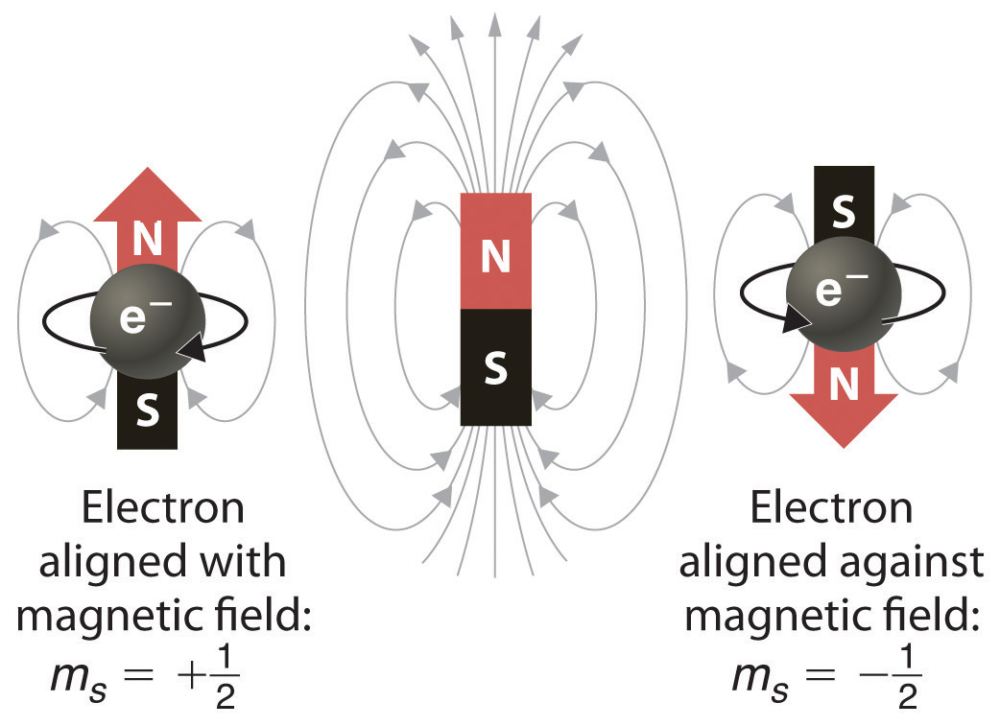In a magnetic field, an electron has two possible orientations with different energies, one with spin up, aligned with the magnetic field, and one with spin down, aligned against it. All other orientations are forbidden.
In an external magnetic field, the electron has two possible orientations (Figure 6.31 "Electron Spin"). These are described by a fourth quantum number (ms), which for any electron can have only two possible values, designated +½ (up) and −½ (down) to indicate that the two orientations are opposites; the subscript s is for spin. An electron behaves like a magnet that has one of two possible orientations, aligned either with the magnetic field or against it.
The implications of electron spin for chemistry were recognized almost immediately by an Austrian physicist,Wolfgang Pauli (1900–1958; Nobel Prize in Physics, 1945), who determined that each orbital can contain no more than two electrons. He developed the Pauli exclusion principleA principle stating that no two electrons in an atom can have the same value of all four quantum numbers.: No two electrons in an atom can have the same values of all four quantum numbers (n, l, ml, ms).
By giving the values of n, l, and ml, we also specify a particular orbital (e.g., 1s with n = 1, l = 0, ml = 0). Because ms has only two possible values (+½ or −½), two electrons, and only two electrons, can occupy any given orbital, one with spin up and one with spin down. With this information, we can proceed to construct the entire periodic table, which, as you learned in Chapter 1 "Introduction to Chemistry", was originally based on the physical and chemical properties of the known elements.
List all the allowed combinations of the four quantum numbers (n, l, ml, ms) for electrons in a 2p orbital and predict the maximum number of electrons the 2p subshell can accommodate.
Given: orbital
Asked for: allowed quantum numbers and maximum number of electrons in orbital
Strategy:
A List the quantum numbers (n, l, ml) that correspond to an n = 2p orbital. List all allowed combinations of (n, l, ml).
B Build on these combinations to list all the allowed combinations of (n, l, ml, ms).
C Add together the number of combinations to predict the maximum number of electrons the 2p subshell can accommodate.
Solution:
A For a 2p orbital, we know that n = 2, l = n − 1 = 1, and ml = −l, (−l +1),…, (l − 1), l. There are only three possible combinations of (n, l, ml): (2, 1, 1), (2, 1, 0), and (2, 1, −1).
B Because ms is independent of the other quantum numbers and can have values of only +½ and −½, there are six possible combinations of (n, l, ml, ms): (2, 1, 1, +½), (2, 1, 1, −½), (2, 1, 0, +½), (2, 1, 0, −½), (2, 1, −1, +½), and (2, 1, −1, −½).
C Hence the 2p subshell, which consists of three 2p orbitals (2px, 2py, and 2pz), can contain a total of six electrons, two in each orbital.
Exercise
List all the allowed combinations of the four quantum numbers (n, l, ml, ms) for a 6s orbital, and predict the total number of electrons it can contain.
Answer: (6, 0, 0, +½), (6, 0, 0, −½); two electrons
The electron configurationThe arrangement of an element’s electrons in its atomic orbitals. of an element is the arrangement of its electrons in its atomic orbitals. By knowing the electron configuration of an element, we can predict and explain a great deal of its chemistry.
We construct the periodic table by following the aufbau principleThe process used to build up the periodic table by adding protons one by one to the nucleus and adding the corresponding electrons to the lowest-energy orbital available without violating the Pauli exclusion principle. (from German, meaning “building up”). First we determine the number of electrons in the atom; then we add electrons one at a time to the lowest-energy orbital available without violating the Pauli principle. We use the orbital energy diagram of Figure 6.29 "Orbital Energy Level Diagram for a Typical Multielectron Atom", recognizing that each orbital can hold two electrons, one with spin up ↑, corresponding to ms = +½, which is arbitrarily written first, and one with spin down ↓, corresponding to ms = −½. A filled orbital is indicated by ↑↓, in which the electron spins are said to be paired. Here is a schematic orbital diagram for a hydrogen atom in its ground state:
From the orbital diagram, we can write the electron configuration in an abbreviated form in which the occupied orbitals are identified by their principal quantum number n and their value of l (s, p, d, or f), with the number of electrons in the subshell indicated by a superscript. For hydrogen, therefore, the single electron is placed in the 1s orbital, which is the orbital lowest in energy (Figure 6.29 "Orbital Energy Level Diagram for a Typical Multielectron Atom"), and the electron configuration is written as 1s1 and read as “one-s-one.”
A neutral helium atom, with an atomic number of 2 (Z = 2), has two electrons. We place one electron in the orbital that is lowest in energy, the 1s orbital. From the Pauli exclusion principle, we know that an orbital can contain two electrons with opposite spin, so we place the second electron in the same orbital as the first but pointing down, so that the electrons are paired. The orbital diagram for the helium atom is therefore
written as 1s2, where the superscript 2 implies the pairing of spins. Otherwise, our configuration would violate the Pauli principle.
The next element is lithium, with Z = 3 and three electrons in the neutral atom. We know that the 1s orbital can hold two of the electrons with their spins paired. Figure 6.29 "Orbital Energy Level Diagram for a Typical Multielectron Atom" tells us that the next lowest energy orbital is 2s, so the orbital diagram for lithium is
This electron configuration is written as 1s22s1.
The next element is beryllium, with Z = 4 and four electrons. We fill both the 1s and 2s orbitals to achieve a 1s22s2 electron configuration:
When we reach boron, with Z = 5 and five electrons, we must place the fifth electron in one of the 2p orbitals. Because all three 2p orbitals are degenerate, it doesn’t matter which one we select. The electron configuration of boron is 1s22s22p1:
At carbon, with Z = 6 and six electrons, we are faced with a choice. Should the sixth electron be placed in the same 2p orbital that already has an electron, or should it go in one of the empty 2p orbitals? If it goes in an empty 2p orbital, will the sixth electron have its spin aligned with or be opposite to the spin of the fifth? In short, which of the following three orbital diagrams is correct for carbon, remembering that the 2p orbitals are degenerate?

Because of electron-electron repulsions, it is more favorable energetically for an electron to be in an unoccupied orbital than in one that is already occupied; hence we can eliminate choice a. Similarly, experiments have shown that choice b is slightly higher in energy (less stable) than choice c because electrons in degenerate orbitals prefer to line up with their spins parallel; thus, we can eliminate choice b. Choice c illustrates Hund’s ruleA rule stating that the lowest-energy electron configuration for an atom is the one that has the maximum number of electrons with parallel spins in degenerate orbitals. (named after the German physicist Friedrich H. Hund, 1896–1997), which today says that the lowest-energy electron configuration for an atom is the one that has the maximum number of electrons with parallel spins in degenerate orbitals. By Hund’s rule, the electron configuration of carbon, which is 1s22s22p2, is understood to correspond to the orbital diagram shown in c. Experimentally, it is found that the ground state of a neutral carbon atom does indeed contain two unpaired electrons.
When we get to nitrogen (Z = 7, with seven electrons), Hund’s rule tells us that the lowest-energy arrangement is
with three unpaired electrons. The electron configuration of nitrogen is thus 1s22s22p3.
At oxygen, with Z = 8 and eight electrons, we have no choice. One electron must be paired with another in one of the 2p orbitals, which gives us two unpaired electrons and a 1s22s22p4 electron configuration. Because all the 2p orbitals are degenerate, it doesn’t matter which one has the pair of electrons.
Similarly, fluorine has the electron configuration 1s22s22p5:
When we reach neon, with Z = 10, we have filled the 2p subshell, giving a 1s22s22p6 electron configuration:
Notice that for neon, as for helium, all the orbitals through the 2p level are completely filled. This fact is very important in dictating both the chemical reactivity and the bonding of helium and neon, as you will see.
As we continue through the periodic table in this way, writing the electron configurations of larger and larger atoms, it becomes tedious to keep copying the configurations of the filled inner subshells. In practice, chemists simplify the notation by using a bracketed noble gas symbol to represent the configuration of the noble gas from the preceding row because all the orbitals in a noble gas are filled. For example, [Ne] represents the 1s22s22p6 electron configuration of neon (Z = 10), so the electron configuration of sodium, with Z = 11, which is 1s22s22p63s1, is written as [Ne]3s1:
| Neon | Z = 10 | 1s22s22p6 |
| Sodium | Z = 11 | 1s22s22p63s1 = [Ne]3s1 |
Because electrons in filled inner orbitals are closer to the nucleus and more tightly bound to it, they are rarely involved in chemical reactions. This means that the chemistry of an atom depends mostly on the electrons in its outermost shell, which are called the valence electronsElectrons in the outermost shell of an atom.. The simplified notation allows us to see the valence-electron configuration more easily. Using this notation to compare the electron configurations of sodium and lithium, we have:
| Sodium | 1s22s22p63s1 = [Ne]3s1 |
| Lithium | 1s22s1 = [He]2s1 |
It is readily apparent that both sodium and lithium have one s electron in their valence shell. We would therefore predict that sodium and lithium have very similar chemistry, which is indeed the case.
As we continue to build the eight elements of period 3, the 3s and 3p orbitals are filled, one electron at a time. This row concludes with the noble gas argon, which has the electron configuration [Ne]3s23p6, corresponding to a filled valence shell.
Draw an orbital diagram and use it to derive the electron configuration of phosphorus, Z = 15. What is its valence electron configuration?
Given: atomic number
Asked for: orbital diagram and valence electron configuration for phosphorus
Strategy:
A Locate the nearest noble gas preceding phosphorus in the periodic table. Then subtract its number of electrons from those in phosphorus to obtain the number of valence electrons in phosphorus.
B Referring to Figure 6.29 "Orbital Energy Level Diagram for a Typical Multielectron Atom", draw an orbital diagram to represent those valence orbitals. Following Hund’s rule, place the valence electrons in the available orbitals, beginning with the orbital that is lowest in energy. Write the electron configuration from your orbital diagram.
C Ignore the inner orbitals (those that correspond to the electron configuration of the nearest noble gas) and write the valence electron configuration for phosphorus.
Solution:
A Because phosphorus is in the third row of the periodic table, we know that it has a [Ne] closed shell with 10 electrons. We begin by subtracting 10 electrons from the 15 in phosphorus.
B The additional five electrons are placed in the next available orbitals, which Figure 6.29 "Orbital Energy Level Diagram for a Typical Multielectron Atom" tells us are the 3s and 3p orbitals:
Because the 3s orbital is lower in energy than the 3p orbitals, we fill it first:
Hund’s rule tells us that the remaining three electrons will occupy the degenerate 3p orbitals separately but with their spins aligned:
The electron configuration is [Ne]3s23p3.
C We obtain the valence electron configuration by ignoring the inner orbitals, which for phosphorus means that we ignore the [Ne] closed shell. This gives a valence-electron configuration of 3s23p3.
Exercise
Draw an orbital diagram and use it to derive the electron configuration of chlorine, Z = 17. What is its valence electron configuration?
Answer: [Ne]3s23p5; 3s23p5
The general order in which orbitals are filled is depicted in Figure 6.32 "Predicting the Order in Which Orbitals Are Filled in Multielectron Atoms". Subshells corresponding to each value of n are written from left to right on successive horizontal lines, where each row represents a row in the periodic table. The order in which the orbitals are filled is indicated by the diagonal lines running from the upper right to the lower left. Accordingly, the 4s orbital is filled prior to the 3d orbital because of shielding and penetration effects. Consequently, the electron configuration of potassium, which begins the fourth period, is [Ar]4s1, and the configuration of calcium is [Ar]4s2. Five 3d orbitals are filled by the next 10 elements, the transition metals, followed by three 4p orbitals. Notice that the last member of this row is the noble gas krypton (Z = 36), [Ar]4s23d104p6 = [Kr], which has filled 4s, 3d, and 4p orbitals. The fifth row of the periodic table is essentially the same as the fourth, except that the 5s, 4d, and 5p orbitals are filled sequentially.
Figure 6.32 Predicting the Order in Which Orbitals Are Filled in Multielectron Atoms
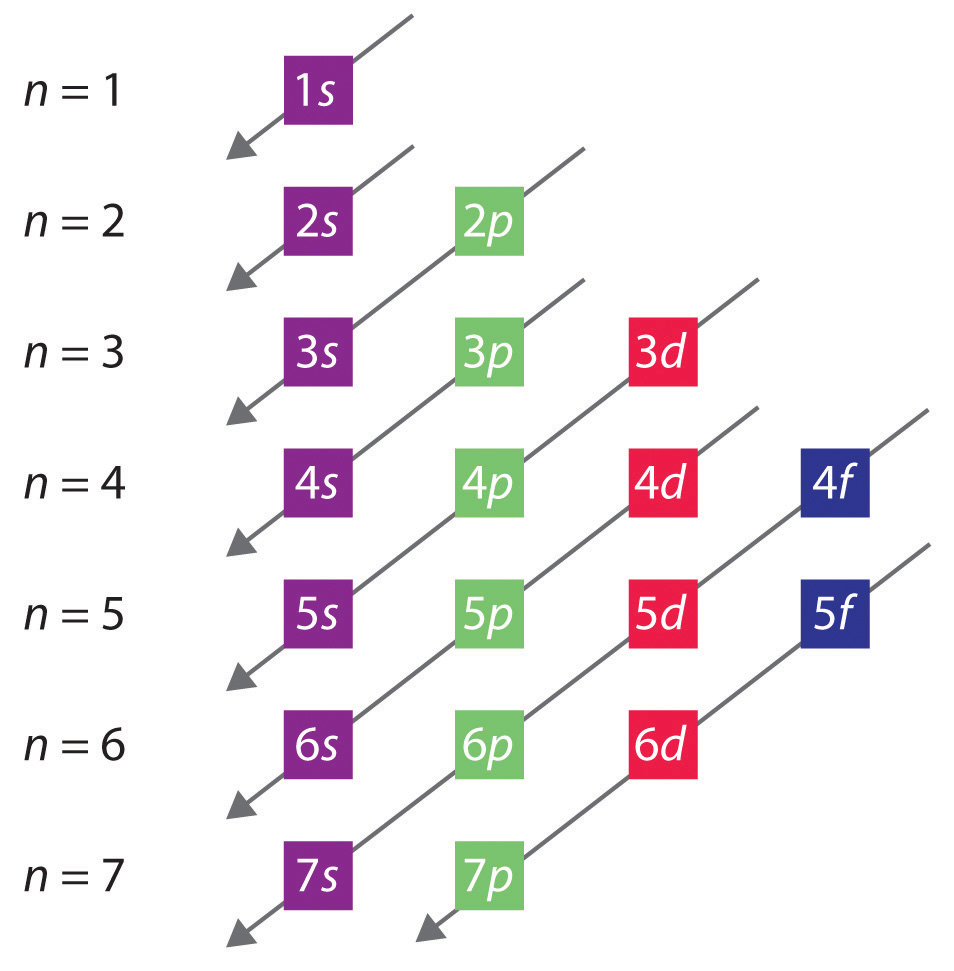If you write the subshells for each value of the principal quantum number on successive lines, the observed order in which they are filled is indicated by a series of diagonal lines running from the upper right to the lower left.
The sixth row of the periodic table will be different from the preceding two because the 4f orbitals, which can hold 14 electrons, are filled between the 6s and the 5d orbitals. The elements that contain 4f orbitals in their valence shell are the lanthanides. When the 6p orbitals are finally filled, we have reached the next (and last known) noble gas, radon (Z = 86), [Xe]6s24f145d106p6 = [Rn]. In the last row, the 5f orbitals are filled between the 7s and the 6d orbitals, which gives the 14 actinide elements. Because the large number of protons makes their nuclei unstable, all the actinides are radioactive.
Write the electron configuration of mercury (Z = 80), showing all the inner orbitals.
Given: atomic number
Asked for: complete electron configuration
Strategy:
Using the orbital diagram in Figure 6.32 "Predicting the Order in Which Orbitals Are Filled in Multielectron Atoms" and the periodic table as a guide, fill the orbitals until all 80 electrons have been placed.
Solution:
By placing the electrons in orbitals following the order shown in Figure 6.32 "Predicting the Order in Which Orbitals Are Filled in Multielectron Atoms" and using the periodic table as a guide, we obtain
| 1s2 | row 1 | 2 electrons |
| 2s22p6 | row 2 | 8 electrons |
| 3s23p6 | row 3 | 8 electrons |
| 4s23d104p6 | row 4 | 18 electrons |
| 5s24d105p6 | row 5 | 18 electrons |
| row 1–5 | 54 electrons |
After filling the first five rows, we still have 80 − 54 = 26 more electrons to accommodate. According to Figure 6.33 "The Periodic Table, Showing How the Elements Are Grouped According to the Kind of Subshell (", we need to fill the 6s (2 electrons), 4f (14 electrons), and 5d (10 electrons) orbitals. The result is mercury’s electron configuration:
1s22s22p63s23p64s23d104p65s24d105p66s24f145d10 = Hg = [Xe]6s24f145d10with a filled 5d subshell, a 6s24f145d10 valence shell configuration, and a total of 80 electrons. (You should always check to be sure that the total number of electrons equals the atomic number.)
Exercise
Although element 114 is not stable enough to occur in nature, two isotopes of element 114 were created for the first time in a nuclear reactor in 1999 by a team of Russian and American scientists. Write the complete electron configuration for element 114.
Answer: 1s22s22p63s23p64s23d104p65s24d105p66s24f145d106p67s25f146d107p2
The electron configurations of the elements are presented in Figure 6.34 "Electron Configurations of the Elements", which lists the orbitals in the order in which they are filled. In several cases, the ground state electron configurations are different from those predicted by Figure 6.32 "Predicting the Order in Which Orbitals Are Filled in Multielectron Atoms". Some of these anomalies occur as the 3d orbitals are filled. For example, the observed ground state electron configuration of chromium is [Ar]4s13d5 rather than the predicted [Ar]4s23d4. Similarly, the observed electron configuration of copper is [Ar]4s13d10 instead of [Ar]s23d9. The actual electron configuration may be rationalized in terms of an added stability associated with a half-filled (ns1, np3, nd5, nf7) or filled (ns2, np6, nd10, nf14) subshell. Given the small differences between higher energy levels, this added stability is enough to shift an electron from one orbital to another. In heavier elements, other more complex effects can also be important, leading to some of the additional anomalies indicated in Figure 6.34 "Electron Configurations of the Elements". For example, cerium has an electron configuration of [Xe]6s24f15d1, which is impossible to rationalize in simple terms. In most cases, however, these apparent anomalies do not have important chemical consequences.
Additional stability is associated with half-filled or filled subshells.
As you have learned, the electron configurations of the elements explain the otherwise peculiar shape of the periodic table. Although the table was originally organized on the basis of physical and chemical similarities between the elements within groups, these similarities are ultimately attributable to orbital energy levels and the Pauli principle, which cause the individual subshells to be filled in a particular order. As a result, the periodic table can be divided into “blocks” corresponding to the type of subshell that is being filled, as illustrated in Figure 6.34 "Electron Configurations of the Elements". For example, the two columns on the left, known as the s blockThe elements in the left two columns of the periodic table in which the ns orbital is being filled., consist of elements in which the ns orbitals are being filled. The six columns on the right, elements in which the np orbitals are being filled, constitute the p blockThe elements in the six columns on the right of the periodic table in which the np orbitals are being filled.. In between are the 10 columns of the d blockThe elements in the periodic table in which the (n − 1)d orbitals are being filled., elements in which the (n − 1)d orbitals are filled. At the bottom lie the 14 columns of the f blockThe elements in the periodic table in which the (n − 2)f orbitals are being filled., elements in which the (n − 2)f orbitals are filled. Because two electrons can be accommodated per orbital, the number of columns in each block is the same as the maximum electron capacity of the subshell: 2 for ns, 6 for np, 10 for (n − 1)d, and 14 for (n − 2)f. Within each column, each element has the same valence electron configuration—for example, ns1 (group 1) or ns2np1 (group 13). As you will see, this is reflected in important similarities in the chemical reactivity and the bonding for the elements in each column.
Because each orbital can have a maximum of 2 electrons, there are 2 columns in the s block, 6 columns in the p block, 10 columns in the d block, and 14 columns in the f block.
Figure 6.33 The Periodic Table, Showing How the Elements Are Grouped According to the Kind of Subshell (s, p, d, f) Being Filled with Electrons in the Valence Shell of Each Element
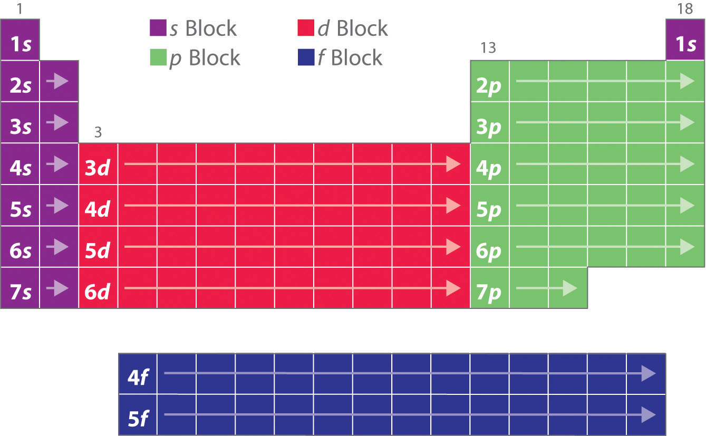The electron configurations of the elements are in Figure 6.34 "Electron Configurations of the Elements".
Hydrogen and helium are placed somewhat arbitrarily. Although hydrogen is not an alkali metal, its 1s1 electron configuration suggests a similarity to lithium ([He]2s1) and the other elements in the first column. Although helium, with a filled ns subshell, should be similar chemically to other elements with an ns2 electron configuration, the closed principal shell dominates its chemistry, justifying its placement above neon on the right. In Chapter 7 "The Periodic Table and Periodic Trends", we will examine how electron configurations affect the properties and reactivity of the elements.
Figure 6.34 Electron Configurations of the Elements
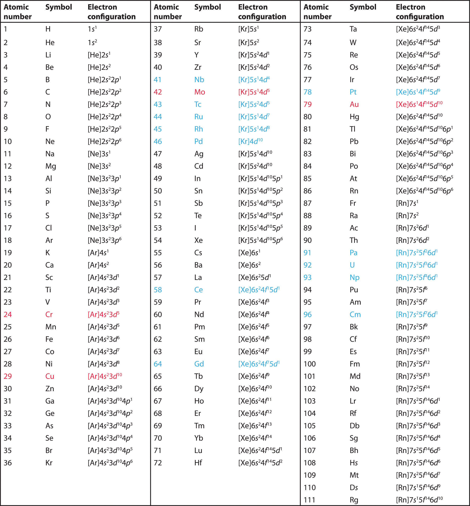The electron configurations of elements indicated in red are exceptions due to the added stability associated with half-filled and filled subshells. The electron configurations of the elements indicated in blue are also anomalous, but the reasons for the observed configurations are more complex. For elements after No, the electron configurations are tentative.
Use the periodic table to predict the valence electron configuration of all the elements of group 2 (beryllium, magnesium, calcium, strontium, barium, and radium).
Given: series of elements
Asked for: valence electron configurations
Strategy:
A Identify the block in the periodic table to which the group 2 elements belong. Locate the nearest noble gas preceding each element and identify the principal quantum number of the valence shell of each element.
B Write the valence electron configuration of each element by first indicating the filled inner shells using the symbol for the nearest preceding noble gas and then listing the principal quantum number of its valence shell, its valence orbitals, and the number of valence electrons in each orbital as superscripts.
Solution:
A The group 2 elements are in the s block of the periodic table, and as group 2 elements, they all have two valence electrons. Beginning with beryllium, we see that its nearest preceding noble gas is helium and that the principal quantum number of its valence shell is n = 2.
B Thus beryllium has an [He]s2 electron configuration. The next element down, magnesium, is expected to have exactly the same arrangement of electrons in the n = 3 principal shell: [Ne]s2. By extrapolation, we expect all the group 2 elements to have an ns2 electron configuration.
Exercise
Use the periodic table to predict the characteristic valence electron configuration of the halogens in group 17.
Answer: All have an ns2np5 electron configuration, one electron short of a noble gas electron configuration. (Note that the heavier halogens also have filled (n − 1)d10 subshells, as well as an (n − 2)f14 subshell for Rn; these do not, however, affect their chemistry in any significant way.
In addition to the three quantum numbers (n, l, ml) dictated by quantum mechanics, a fourth quantum number is required to explain certain properties of atoms. This is the electron spin quantum number (ms), which can have values of +½ or −½ for any electron, corresponding to the two possible orientations of an electron in a magnetic field. The concept of electron spin has important consequences for chemistry because the Pauli exclusion principle implies that no orbital can contain more than two electrons (with opposite spin). Based on the Pauli principle and a knowledge of orbital energies obtained using hydrogen-like orbitals, it is possible to construct the periodic table by filling up the available orbitals beginning with the lowest-energy orbitals (the aufbau principle), which gives rise to a particular arrangement of electrons for each element (its electron configuration). Hund’s rule says that the lowest-energy arrangement of electrons is the one that places them in degenerate orbitals with their spins parallel. For chemical purposes, the most important electrons are those in the outermost principal shell, the valence electrons. The arrangement of atoms in the periodic table results in blocks corresponding to filling of the ns, np, nd, and nf orbitals to produce the distinctive chemical properties of the elements in the s block, p block, d block, and f block, respectively.
A set of four quantum numbers specifies each wave function. What information is given by each quantum number? What does the specified wave function describe?
List two pieces of evidence to support the statement that electrons have a spin.
The periodic table is divided into blocks. Identify each block and explain the principle behind the divisions. Which quantum number distinguishes the horizontal rows?
Identify the element with each ground state electron configuration.
Identify the element with each ground state electron configuration.
Propose an explanation as to why the noble gases are inert.
How many magnetic quantum numbers are possible for a 4p subshell? A 3d subshell? How many orbitals are in these subshells?
How many magnetic quantum numbers are possible for a 6s subshell? A 4f subshell? How many orbitals does each subshell contain?
If l = 2 and ml = 2, give all the allowed combinations of the four quantum numbers (n, l, ml, ms) for electrons in the corresponding 3d subshell.
Give all the allowed combinations of the four quantum numbers (n, l, ml, ms) for electrons in a 4d subshell. How many electrons can the 4d orbital accommodate? How would this differ from a situation in which there were only three quantum numbers (n, l, m)?
Given the following sets of quantum numbers (n, l, ml, ms), identify each principal shell and subshell.
Is each set of quantum numbers allowed? Explain your answers.
List the set of quantum numbers for each electron in the valence shell of each element.
List the set of quantum numbers for each electron in the valence shell of each element.
Sketch the shape of the periodic table if there were three possible values of ms for each electron (+½, −½, and 0); assume that the Pauli principle is still valid.
Predict the shape of the periodic table if eight electrons could occupy the p subshell.
If the electron could only have spin +½, what would the periodic table look like?
If three electrons could occupy each s orbital, what would be the electron configuration of each species?
If Hund’s rule were not followed and maximum pairing occurred, how many unpaired electrons would each species have? How do these numbers compare with the number found using Hund’s rule?
Write the electron configuration for each element in the ground state.
Write the electron configuration for each element in the ground state.
Give the complete electron configuration for each element.
Give the complete electron configuration for each element.
Write the valence electron configuration for each element:
Using the Pauli exclusion principle and Hund’s rule, draw valence orbital diagrams for each element.
Using the Pauli exclusion principle and Hund’s rule, draw valence orbital diagrams for each element.
How many unpaired electrons does each species contain?
How many unpaired electrons does each species contain?
For each element, give the complete electron configuration, draw the valence electron configuration, and give the number of unpaired electrons present.
Use an orbital diagram to illustrate the aufbau principle, the Pauli exclusion principle, and Hund’s rule for each element.
For a 4p subshell, n = 4 and l = 1. The allowed values of the magnetic quantum number, ml, are therefore +1, 0, −1, corresponding to three 4p orbitals. For a 3d subshell, n = 3 and l = 2. The allowed values of the magnetic quantum number, ml, are therefore +2, +1, 0, −1, −2, corresponding to five 3d orbitals.
n = 3, l = 2, ml = 2, ms = ;n = 3, l = 2, ml = 2, ms =
The lamps in street lights use emission of light from excited states of atoms to produce a characteristic glow. Light is generated by electron bombardment of a metal vapor. Of calcium and strontium, which metal vapor would you use to produce yellow light? Which metal would you use to produce red light? Calculate the energy associated with each transition and propose an explanation for the colors of the emitted light.
Lasers have useful medical applications because their light is directional (permitting tight focus of the laser beam for precise cutting), monochromatic, and intense. Carbon dioxide lasers, emitting at a wavelength of 1.06 × 104 nm, are typically used in surgery.
An excimer (meaning “excited dimer”) laser emits light in the ultraviolet region of the spectrum. An example of such a laser is krypton fluoride (KrF), which emits light at a wavelength of 248 nm. What is the energy in joules of a mole of photons emitted from this laser? How much more energetic is a single photon of this wavelength than a photon from a carbon dioxide laser used in surgery (10,600 nm)?
Wavelengths less than 10 nm are needed to “see” objects on an atomic or molecular scale. Such imaging can be accomplished with an electron microscope, which uses electric and magnetic fields to focus and accelerate a beam of electrons to a high velocity. Electron microscopy is now a powerful tool in chemical research. What electron velocity is needed to produce electrons with a wavelength of 4 × 10−3 nm, which is sufficient to produce an image of an atom? If electromagnetic radiation were used, what region of the electromagnetic spectrum would this correspond to?
Microwave ovens operate by emitting microwave radiation, which is primarily absorbed by water molecules in food. The absorbed radiation is converted to heat through rapid oscillations of polar water molecules, which cooks the food and warms beverages. If 7.2 × 1028 photons are needed to heat 150.0 g of water from 20.0°C to 100.0°C in a microwave oven, what is the frequency of the microwaves? Metal objects should not be placed in a microwave oven because they cause sparks. Why does this cause sparks?
The magnitude of the energy gap between an excited state and a ground state determines the color of visible light that is absorbed. The observed color of an object is not the color of the light it absorbs but rather the complement of that color. The accompanying rosette, first developed by Isaac Newton, shows the colors increasing in energy from red to violet. Any two colors that are opposite each other are said to be complementary (e.g., red and green are complementary).

Given the absorption spectra and following table, what are the colors of the objects that produce spectra A, B, and C?

| Wavelength (nm) | Color of Light |
|---|---|
| 390–453 | violet |
| 453–492 | blue |
| 492–577 | green |
| 577–597 | yellow |
| 597–622 | orange |
| 622–780 | red |
Photodegradation of atmospheric ozone occurs via the reaction O3 + hν → O2 + O; the maximum absorption occurs at approximately 255 nm. In what region of the electromagnetic spectrum does this occur? Based on this information, what would be the effect of depleting the ozone layer of Earth’s atmosphere?
A microscope’s resolution (its ability to distinguish between two points separated by a given distance) depends on the wavelength of light used to illuminate an object. The resolution R is given by the equation R = λ/2N, where N is a constant related to the aperture. If a microscope has an aperture constant of 0.25, what is the smallest distance between two objects that can be resolved using the following light sources?
Silver bromide is the photosensitive material in 35 mm photographic film. When monochromatic light falls on film, the photons are recorded if they contain sufficient energy to react with silver bromide in the film. Given that the minimum energy needed to do this is approximately 57.9 kJ/mol, explain why red light is used to light a darkroom. What happens when the door to the darkroom is opened, allowing yellow light to enter?
A lighting system has recently been developed that uses a quartz bulb the size of a golf ball filled with an inert gas and a small amount of sulfur. When irradiated by microwaves, the bulb puts out as much light as hundreds of high-intensity mercury vapor lamps. Because 1000 kJ/mol is needed to ionize sulfur, can this process occur simply by irradiating sulfur atoms with microwaves? Explain your answer.
The following table lists the ionization energies of some common atmospheric species:
| Species | Ionization Energy (kJ/mol) |
|---|---|
| NO | 897 |
| CO2 | 1330 |
| O2 | 1170 |
An artist used a pigment that has a significant absorption peak at 450 nm, with a trace absorption at 530 nm. Based on the color chart and table in Problem 6, what was the color of the paint? Draw the absorption pattern. What would the absorption spectrum have looked like if the artist had wanted green? Using absorption spectra, explain why an equal combination of red and yellow paints produces orange.
You live in a universe where an electron has four different spins (ms = +½, +¼, −½, −¼) and the periodic table has only 36 elements. Which elements would be noble gases? What would the periodic table look like? (Assume that the Pauli exclusion principle is still valid.)
If you were living on a planet where there were three quantum numbers (n, l, m) instead of four, what would be the allowed combinations for an electron in a 3p orbital? How many electrons would this orbital contain assuming the Pauli exclusion principle were still in effect? How does this compare with the actual number of allowed combinations found on Earth?
X-rays are frequently used to project images of the human body. Recently, however, a superior technique called magnetic resonance imaging (MRI) has been developed that uses proton spin to image tissues in spectacular detail. In MRI, spinning hydrogen nuclei in an organic material are irradiated with photons that contain enough energy to flip the protons to the opposite orientation. If 33.121 kJ/mol of energy is needed to flip a proton, what is the resonance frequency required to produce an MRI spectrum? Suggest why this frequency of electromagnetic radiation would be preferred over x-rays.
Vanadium has been found to be a key component in a biological catalyst that reduces nitrogen to ammonia. What is the valence electron configuration of vanadium? What are the quantum numbers for each valence electron? How many unpaired electrons does vanadium have?
Tellurium, a metal used in semiconductor devices, is also used as a coloring agent in porcelains and enamels. Illustrate the aufbau principle, the Pauli exclusion principle, and Hund’s rule using tellurium metal.
A new element is believed to have been discovered by a team of Russian and American scientists, although its existence is yet to be independently confirmed. Six atoms of element 117, temporarily named ununseptium, were created by smashing together isotopes of calcium with the element berkelium. Give the following: